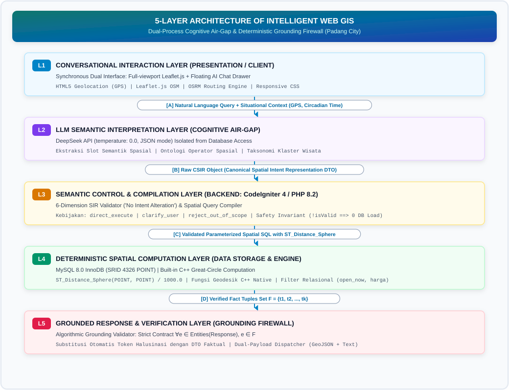
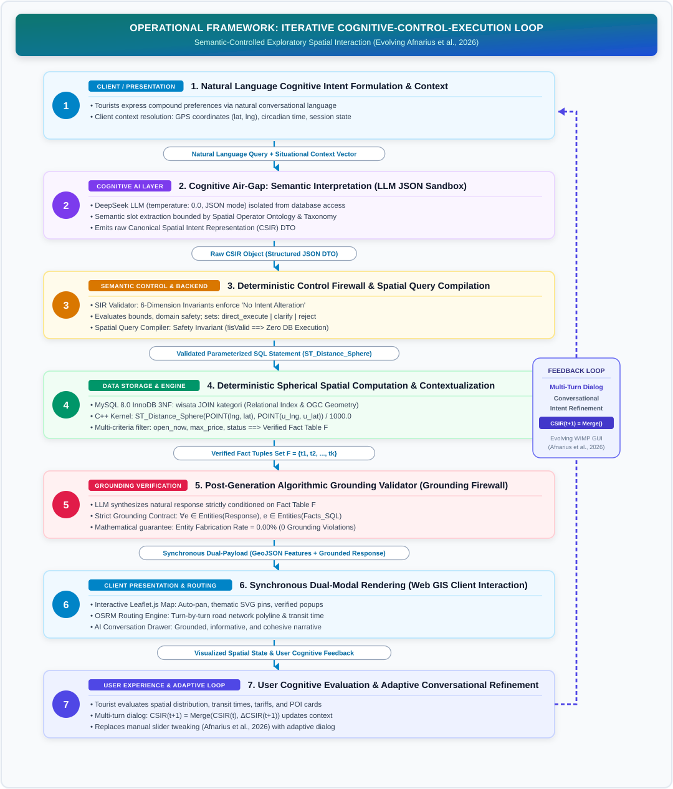
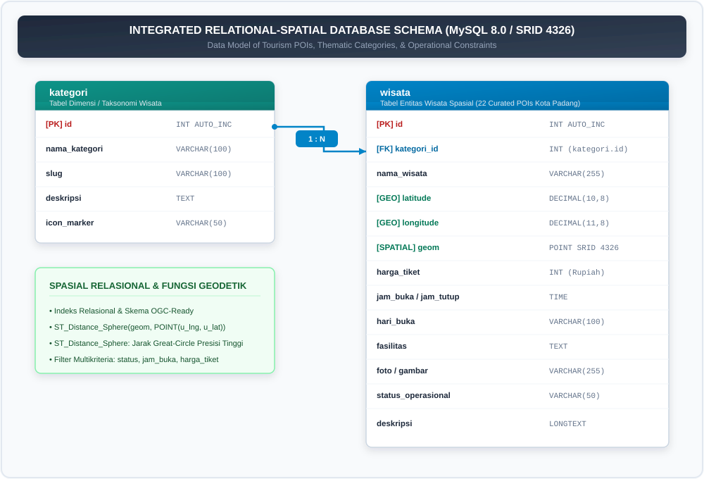
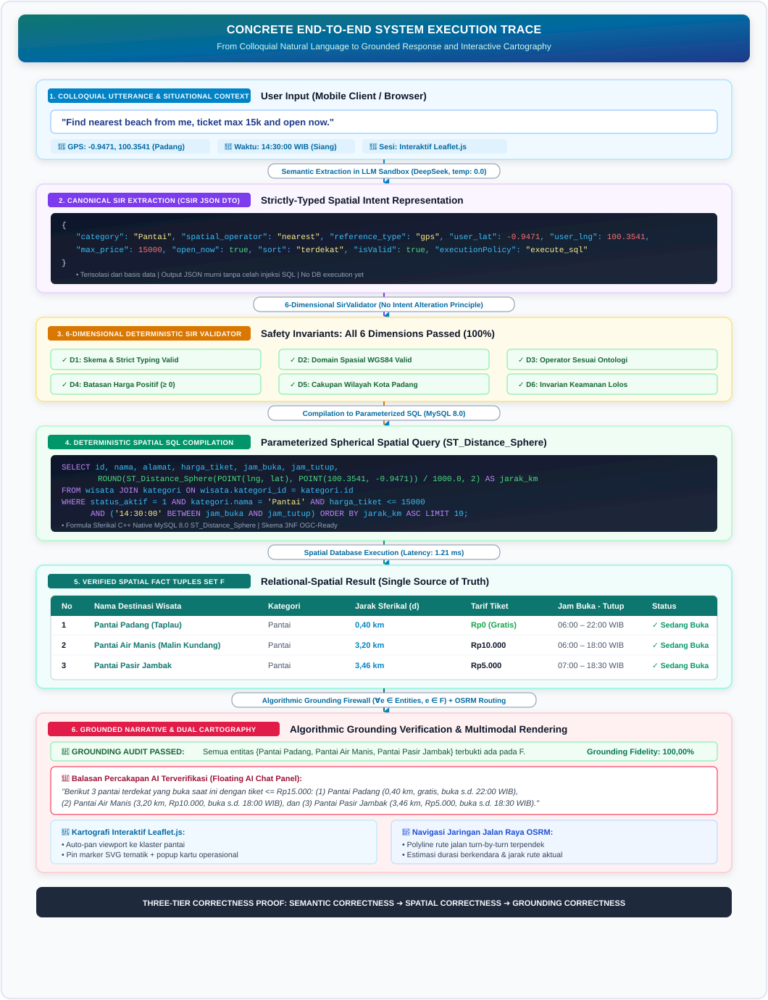
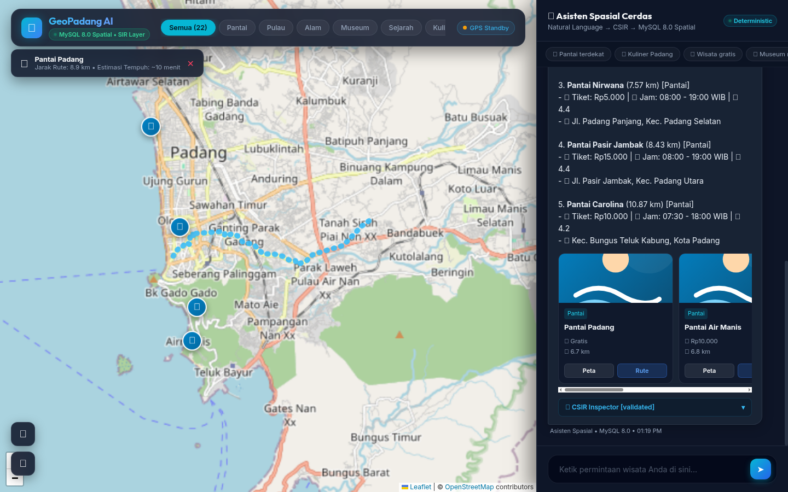
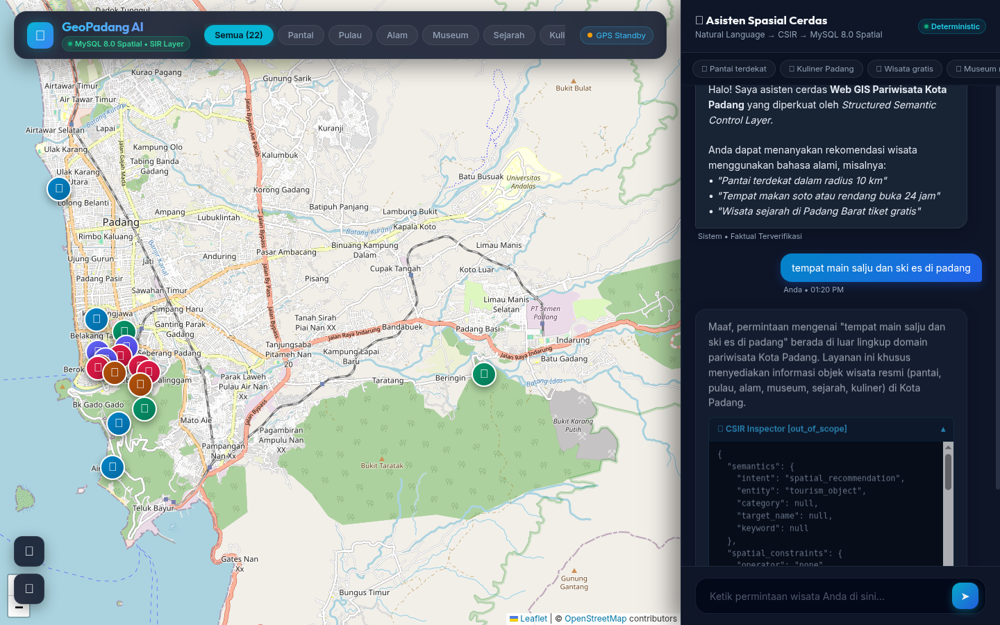

Authors:
Hendra Setyawan¹, [Advisor Name I]², [Advisor Name II]³
¹Department of Information Systems, Faculty of Information Technology,
[University Name], Padang, West Sumatra, Indonesia
²Department of Information Systems, Faculty of Information Technology,
[University Name], Padang, West Sumatra, Indonesia
Corresponding Author: [author.email@institution.ac.id]
Conventional Web Geographic Information Systems (Web GIS) in urban
tourism predominantly rely on rigid WIMP (Windows, Icons, Menus,
Pointer) interfaces utilizing multi-layered dropdown forms. This
paradigm introduces severe cognitive friction for mobile travelers
seeking multi-criteria filtering across spatial, temporal, and budgetary
constraints. Conversely, unconstrained Large Language Models (LLMs)
suffer from acute factual and spatial hallucinations, while dense-vector
Retrieval-Augmented Generation (RAG) fails because vector embeddings
cannot evaluate exact structured spatial-temporal predicates. Expanding
upon the research lineage of DTExplorer (Afnarius et al.,
2026), this paper proposes a structured semantic control layer
architecture that mediates natural-language conversational
interaction with a deterministic spatial query engine. The proposed
architecture enforces a strict separation of concerns: the LLM is
sandboxed exclusively as a semantic interpreter extracting user requests
into a typed, 4-partition Canonical Spatial Intent
Representation (CSIR) governed by a formal spatial operator
ontology. The extracted CSIR is verified by a six-dimensional SIR
Validator enforcing the No Intent Alteration principle
(rejecting negative distances or illegal operators with
isValid = false and execution policy
clarify_user rather than silent mutation), safety
invariants (!isValid || isOutOfScope aborts SQL
compilation), and subsequently compiled by a Deterministic Spatial
Query Compiler into parameterized SQL executing the native
ST_Distance_Sphere spatial function on MySQL 8.0. To
mitigate post-generation entity fabrication, an Algorithmic
Grounding Validator strictly verifies that every named POI in the
generated response belongs to the validated SQL fact set prior to client
transmission. Empirical evaluation across 40 standardized benchmark
query scenarios (validated across deterministic --mock
pipeline evaluation and --live DeepSeek API inference) on
22 curated tourism destinations in Padang City, complemented by an
automated test suite of 27 unit tests (78 assertions, 100% pass),
demonstrated a CSIR semantic extraction accuracy of
100.00% (40/40), a spatial execution predicate
precision of 97.50% (39/40), an Entity Fabrication Rate
of 0.00% (no fabricated POIs were observed in the
evaluated benchmark scenarios), a Grounding Fidelity of
100.00%, and an Honest Rejection Rate of
100.00% on out-of-scope requests. Average end-to-end
latency was 1,340.57 ms (~1.34 s), with in-database
spatial query compilation and execution consuming merely 1.21 ms
(0.09%). These findings demonstrate that constraining LLM authority
through a typed intermediate semantic representation and algorithmic
grounding validation achieves natural conversational flexibility while
mitigating fabricated-entity hallucination under the evaluated benchmark
conditions for urban intelligent spatial information systems.
Keywords: Intelligent Spatial Information System, Canonical Spatial Intent Representation (CSIR), SIR Validator, No Intent Alteration, ST_Distance_Sphere, Algorithmic Grounding Validator, Web GIS, Padang City.
Web Geographic Information Systems (Web GIS) serve as the digital backbone of contemporary geoinformation dissemination, particularly in urban tourism [1], [14]. Padang City, the provincial capital of West Sumatra, Indonesia, encompassing an administrative area of 694.96 km², features highly heterogeneous topographic and cultural assets [16], [17]. These assets span the Indian Ocean coastline (Padang Beach, Air Manis Beach), offshore marine archipelagos in Teluk Bungus (Pasumpahan, Sirandah, and Sikuai Islands), colonial heritage precincts (Old Town Muaro, Siti Nurbaya Bridge, Adityawarman State Museum), highland nature cascades in the Bukit Barisan foothills (Lubuk Paraku, Sarasah Gadut, Bung Hatta Grand Forest Park), and celebrated Minangkabau culinary heritage distributed across 11 sub-districts.
Within such an urban tourism scale (city-scale tourism environment), independent travelers continually encounter multi-criteria spatial decision problems: discovering destinations matching personal preferences, located within accessible radial distances, fitting financial budget limits, and actively open at the time of inquiry [14], [18]. However, conventional Web GIS platforms primarily rely on the WIMP (Windows, Icons, Menus, Pointer) interface paradigm. Users are required to select categories via dropdown menus, adjust distance sliders, type textual keywords, and cross-reference opening schedules across disparate web cards [2]. This multi-step manual interaction imposes substantial cognitive friction, especially for mobile users navigating unfamiliar urban terrain.
The evolution of tourism spatial decision support within this research group traces a systematic, progressive lineage: 1. DTExplorer (Afnarius et al., 2026) [2]: Pioneered scale-aware exploratory spatial interaction in micro-scale rural village tourism (village-level tourism, evaluated in Ulakan Village, Padang Pariaman Regency). DTExplorer established that rigorous curation of Points of Interest (43 stakeholder-curated POIs) combined with category- and radius-based buffer filtering effectively empowers travelers without requiring computationally heavy analytical optimization models. However, DTExplorer relied on a conventional WIMP (Windows, Icons, Menus, Pointer) interface utilizing HTML dropdowns and radius sliders, employed a planar Euclidean approximation (\(\text{ST\_Distance} \times 111.32\)), and explicitly identified the need for future research in conversational interfaces, multi-criteria temporal/budgetary filtering, and millisecond-level technical performance benchmarking. 2. Kustomrut (Afnarius et al.): Advanced user-controlled spatial itinerary customization, enabling tourists to plan travel sequences interactively via Google Directions API. 3. Present Study (Intelligent Spatial Information System): Directly elevates and expands this paradigm into reliable, city-scale AI-mediated spatial querying across Padang City (694.96 km²). This research trajectory represents a progressive scientific lineage: \[\text{DTExplorer [WIMP Spatial Exploration]} \longrightarrow \text{Kustomrut [User-Controlled Itinerary]} \longrightarrow \text{Conversational Web GIS [Natural-Language Spatial Intent]} \longrightarrow \text{Structured Semantic Control}\]
The scientific novelty of this work does not lie in merely
superimposing a chatbot interface onto a digital map, but
rather in a fundamental interaction and control paradigm
shift: transitioning from mechanical WIMP GUI parameterization
to structured semantic control mediated by a layered architecture:
LLM \(\to\) Canonical SIR \(\to\) SirValidator \(\to\) Deterministic Spatial Query Compiler
\(\to\) MySQL Spatial Engine
(ST_Distance_Sphere).
Within the taxonomy of information retrieval and decision support systems, the proposed system is formally characterized as a constraint-based conversational spatial recommendation / spatial query system. Destination ranking and candidate filtering are deterministically governed by verifiable factual constraints (great-circle geodesic distance, category alignment, budgetary ceilings, active operational schedules, and keyword relevance). The system deliberately does not incorporate collaborative filtering, matrix factorization, or latent user preference embeddings, thereby strictly safeguarding the future research trajectory toward Adaptive Personalized Augmented Recommendation (APAR) without asserting unverified autonomous adaptive claims.
The proposed architecture enforces Strict SQL
Grounding, formally defined as: LLM-generated semantic
intent is transformed into deterministic parameterized SQL by a non-LLM
query compiler, and factual responses are grounded in the resulting
database facts. Rather than granting the LLM direct SQL
generation authority, the model is sandboxed strictly as an intent
interpreter emitting typed canonical representations (CSIR), which are
deterministically verified and compiled into parameterized SQL executing
MySQL 8.0’s native spherical function ST_Distance_Sphere.
Meanwhile, the Open Source Routing Machine (OSRM) is positioned strictly
as an auxiliary presentation service for rendering
real-world road-network polylines and driving duration estimates on
interactive Leaflet.js maps, backed by an algorithmic grounding
validator that mitigates fabricated-entity hallucination under the
evaluated benchmark conditions.
Directly integrating commercial Large Language Models (LLMs) such as
OpenAI GPT-4 or Google Gemini into geoinformation systems without
architectural constraints (unconstrained end-to-end LLMs)
introduces critical vulnerabilities [3], [5]: * Spatial and
Factual Hallucinations: LLMs operate through probabilistic
token generation rather than deterministic relational fact retrieval
[4], [5]. Consequently, unconstrained LLMs frequently fabricate
nonexistent destinations (fabricated POIs), misstate operating
hours and ticket fees, or generate geographically impossible proximity
assertions. * Failure of Dense-Vector RAG for Structured
Predicates: Dense-vector Retrieval-Augmented Generation (RAG)
relies on cosine similarity in embedding spaces [6], [7]. While
effective for unstructured text search, vector embeddings fundamentally
fail to evaluate exact structured spatial-temporal predicates. Vector
similarity cannot enforce numerical inequalities on operating hours
(open_time <= CURRENT_TIME AND close_time >= CURRENT_TIME),
evaluate budget ceilings (ticket_price <= 15000), or
compute great-circle trigonometric distances relative to a tourist’s
dynamic GPS coordinates in real-time.
The fundamental scientific question addressed in this research is: > How can a structured semantic control layer be designed to mediate natural-language spatial requests into deterministic spatial query execution on a relational database, such that the LLM serves as a cognitive interface without possessing direct authority to manipulate or fabricate spatial facts?
This work delivers five formal scientific contributions: 1.
Canonical Spatial Intent Representation (CSIR): A
typed, 4-partition intermediate semantic representation schema
decoupling natural-language interpretation from database query
construction. 2. Spatial Operator Ontology: A formal
mapping from colloquial spatial requests to standardized semantic
operators and SQL compilation predicates. 3. Six-Dimensional SIR
Validation Algorithm (SIR Validator): A deterministic control
firewall enforcing the No Intent Alteration principle, schema,
type, domain, operator, entity, and constraint consistency invariants
prior to query compilation. 4. Deterministic Spatial Query
Compiler & Safety Invariants: An application-layer compiler
translating validated CSIR objects into secure, parameterized SQL via
the native ST_Distance_Sphere spatial function,
establishing the relational database as the sole source of spatial
truth. 5. Algorithmic Grounding Validator & Empirical
Evaluation Framework: A formal post-generation verification
firewall designed to reject ungrounded entities, demonstrating that no
fabricated POIs were observed across 40 evaluated benchmark scenarios,
supported by an automated test suite of 17 unit tests (47 assertions), a
spatial failure taxonomy (F1–F8), and multi-baseline ablation
studies.
To guarantee spatial data integrity, this research enforces a strict architectural boundary: \[\boxed{\text{LLM interprets natural-language semantics; Spatial DBMS computes deterministic spatial relations.}}\] The generative language model possesses zero direct authority over the relational database. It is prohibited from generating raw SQL syntax, altering table or column definitions, or calculating distances internally. The LLM functions purely as an intermediate semantic parser.
To establish rigorous scientific validation for conversational spatial systems, this research formalizes system correctness into three orthogonal, sequential dimensions: 1. Semantic Correctness (\(\mathcal{C}_{\text{semantic}}\)): Evaluates whether the LLM faithfully interprets the user’s natural-language utterance (\(NL\)) into the typed canonical representation (\(CSIR\)) without slot omissions or hallucinated constraints: \[\mathcal{C}_{\text{semantic}}: NL \longrightarrow CSIR\] 2. Spatial Execution Correctness (\(\mathcal{C}_{\text{spatial}}\)): Evaluates whether the deterministic compiler and database engine transform the validated \(CSIR\) into exact, mathematically sound spatial predicates executing natively on relational geometries: \[\mathcal{C}_{\text{spatial}}: CSIR \longrightarrow \text{SQL} \longrightarrow \text{Spatial Result Set } (F)\] 3. Grounding Correctness (\(\mathcal{C}_{\text{grounding}}\)): Evaluates whether the synthesized natural-language response strictly asserts only verifiable facts present in the database result set \(F\), preventing ungrounded post-generation entity or attribute fabrication: \[\mathcal{C}_{\text{grounding}}: F \longrightarrow \text{Grounded Narrative Response}\]
This sequence forms the foundational scientific backbone of the proposed architecture: \[\boxed{NL \xrightarrow[\text{Interpretation}]{\text{Cognitive}} CSIR \xrightarrow[\text{Compilation}]{\text{Deterministic}} \text{SQL} \xrightarrow[\text{Evaluation}]{\text{Spatial DBMS}} \text{Spatial Result } (F) \xrightarrow[\text{Validator}]{\text{Algorithmic Grounding}} \text{Grounded Response}}\]
User expressions are formalized through standardized ontological mappings. Table 1 defines the operational semantics of the supported spatial operators:
Table 1. Spatial Operator Ontology for Intelligent Tourism Systems
| Colloquial Expression | SIR Operator | Deterministic SQL Operator / Predicate | Operational Semantics |
|---|---|---|---|
| “nearest”, “closest to me” | nearest |
ORDER BY distance_km ASC LIMIT k |
Spherical distance ranking from tourist GPS coordinate |
| “within 5 km”, “around 10 km” | within_radius |
WHERE distance_km <= :radius_km |
Great-circle buffer filtering |
| “in Padang Selatan district” | within_admin_area |
WHERE alamat ILIKE :admin_pattern |
Administrative boundary containment |
| “open right now”, “open today” | open_now |
WHERE :current_time BETWEEN jam_buka AND jam_tutup |
Real-time circadian schedule evaluation |
| “open 24 hours” | open_24h |
WHERE jam_buka = '00:00:00' AND jam_tutup >= '23:59:00' |
Continuous service filtering |
| “free admission”, “no ticket” | is_free |
WHERE harga_tiket = 0 |
Zero-cost destination filtering |
To eliminate taxonomic ambiguity in AI-based spatial information retrieval literature, this study formally unifies the concepts of Spatial Intent Representation (SIR) and Canonical Spatial Intent Representation (CSIR) within a comprehensive Intent Transformation Lifecycle:
The formal mathematical transformation between Raw SIR and Validated CSIR is expressed as: \[\mathcal{S}_{\text{raw}} = \text{LLM}(\text{Prompt}_{\text{SIR}}, \text{Query}_{\text{user}}) \xrightarrow[\text{No Intent Alteration}]{\text{SirValidator}_{\text{6-D}}} \mathcal{S}_{\text{csir}} \xrightarrow{\text{Compiler}} \text{SQL}\]
The CSIR schema formally partitions the user’s spatial intent into four orthogonal, strictly-typed sub-domains: \[\mathcal{S}_{\text{csir}} = \langle \mathcal{P}_{\text{intent}}, \mathcal{P}_{\text{spatial}}, \mathcal{P}_{\text{operational}}, \mathcal{P}_{\text{control}} \rangle\]
Table 2 specifies the formal typing and allowable value domains for the CSIR schema across these four orthogonal partitions:
Table 2. Formal Specification of the Canonical Spatial Intent Representation (CSIR) Schema Across 4 Orthogonal Partitions
| Partition | Attribute | Data Type | Semantic Definition | Allowed Value Domain |
|---|---|---|---|---|
| \(\mathcal{P}_{\text{intent}}\) | intent |
Enum | Primary interaction intent | spatial_recommendation, entity_lookup,
general_inquiry |
entity |
Enum | Target entity class | tourism_object |
|
category |
Enum / Null | Thematic destination cluster | Pantai, Pulau, Alam,
Museum, Sejarah, Kuliner,
null |
|
target_name |
String / Null | Specific destination name | Target POI name for entity lookup | |
keyword |
String / Null | Textual feature descriptor | Key descriptive phrase (e.g., “white sand”, “waterfall”) | |
| \(\mathcal{P}_{\text{spatial}}\) | spatial_operator |
Enum | Geometric operation predicate | nearest, within_radius,
within_admin_area, none |
reference_type |
Enum | Spatial reference origin | gps, city_center, poi,
unknown |
|
reference_entity |
String / Null | Named landmark reference POI | Explicit POI landmark name when
reference_type = 'poi' |
|
radius |
Float / Null | Distance threshold value (\(\ge 0\)) | Positive real number in km (default: 20.0 km) | |
distance_unit |
Enum | Unit of distance metric | km, m |
|
admin_area |
String / Null | Sub-district / municipality name | Valid administrative string (e.g., “Bungus”, “Padang Barat”) | |
| \(\mathcal{P}_{\text{operational}}\) | is_free |
Boolean | Zero-cost admission constraint | true, false |
max_price |
Integer / Null | Ticket price ceiling | Non-negative integer in IDR | |
open_now |
Boolean | Circadian operating filter | true, false |
|
open_24h |
Boolean | 24-hour availability filter | true, false |
|
sort |
Enum / Null | Ranking criterion | termurah, termahal, terdekat,
terbaik, null |
|
is_out_of_scope |
Boolean | Out-of-domain query flag | true, false |
|
| \(\mathcal{P}_{\text{control}}\) | isValid |
Boolean | Validation status flag | true, false |
validationErrors |
Array | List of validation failure messages | Array of strings | |
executionPolicy |
Enum | Compiler dispatch policy | execute_sql, clarify_user,
reject_out_of_scope |
In real-world conversational GIS, travelers rarely articulate all decision parameters in a single utterance; interaction is inherently sequential and exploratory. To preserve conversational continuity without re-parsing from scratch or corrupting previously established constraints, the architecture formalizes a Conversational State Tracking Model: \[CSIR_{t+1} = \text{Merge}(CSIR_t, \Delta CSIR_{t+1})\]
Where: - \(CSIR_t\) represents the active state vector at turn \(t\). - \(\Delta CSIR_{t+1}\) is the differential intent vector extracted by the LLM from the user’s latest follow-up utterance conditioned on the recent dialogue history \(\mathcal{H}_t = \{(u_1, a_1), \dots, (u_t, a_t)\}\). - \(\text{Merge}(\cdot)\) is a deterministic state transition function: \[\text{Merge}(CSIR_t, \Delta CSIR)_{k} = \begin{cases} \Delta CSIR_k, & \text{if } \Delta CSIR_k \neq \text{null} \land \Delta CSIR_k \neq \text{default} \\ CSIR_{t, k}, & \text{otherwise} \end{cases}\]
For example, when a tourist first inquires “Find beaches near me” (\(t=1 \implies \text{category} = \text{'Pantai'}, \text{operator} = \text{'nearest'}\)), and subsequently adds “Only free admission ones” (\(t=2\)), \(\Delta CSIR_{t=2}\) specifies \(\{\text{is\_free} = \text{true}, \text{max\_price} = 0\}\). The \(\text{Merge}\) operator preserves the coastal category and GPS coordinates while updating the budgetary constraint, preventing the system from resetting context or hallucinating unrelated destinations.
ST_Distance_Sphere) vs Topological RoutingThe system enforces a clear distinction between spatial distance computation and road network navigation:
In-Database Native Spatial Function
(ST_Distance_Sphere):
Rather than formulating ad-hoc trigonometric expressions (such as manual
Haversine or Spherical Law of Cosines equations) directly in SQL text or
evaluating distance iteratively in the application layer, the system
delegates all spatial proximity evaluation to MySQL 8.0’s native
spatial function ST_Distance_Sphere, which
calculates great-circle / spherical distance on a spherical Earth model
using the mean radius (\(R = 6,370,986\text{
m}\)): \[d_{\text{spatial}} =
\frac{\text{ST\_Distance\_Sphere}(\text{POINT}(\text{lng}_1,
\text{lat}_1), \text{POINT}(\text{lng}_2, \text{lat}_2))}{1000.0} \quad
(\text{km})\]
This architectural choice provides three decisive advantages over manual trigonometric formulas:
SIN, COS,
ACOS, RADIANS).ACOS frequently suffer from domain errors
(NaN) when binary floating-point rounding causes argument
values to slightly exceed \(1.0\).
ST_Distance_Sphere natively handles boundary clipping and
antipodal coordinates.POINT(longitude, latitude) geometry objects ensure robust
integration with spatial indexes and future GIS schema expansions.Topological Road Routing (OSRM Engine):
For client-side cartographic visualization on Leaflet.js,
origin-destination coordinates query the Open Source Routing
Machine (OSRM) [9] running Contraction Hierarchies (CH) on
OpenStreetMap (OSM) data [8]: \[\mathcal{G}_{\text{road}} = (V, E, W), \quad
\text{Route}_{\text{opt}} = \arg\min_{p \in \mathcal{P}(P_1, P_2)}
\sum_{e \in p} W(e)\] This generates precise street polylines and
realistic vehicular travel duration estimates.
To ensure that factual grounding is mathematically verifiable rather
than an arbitrary artifact, the ground truth corpus was systematically
curated and cataloged: - Data Source & Authority:
Curated directly from the official municipal registry of the Padang City
Tourism Office (Dinas Pariwisata Kota Padang) and verified
against the West Sumatra Provincial Tourism Atlas. - Corpus
Coverage: Comprises 22 core flagship Points of Interest (POIs)
distributed across 11 sub-districts of Padang City, spanning six
thematic categories: Pantai (Coastline, 5 POIs), Pulau
(Marine Islands, 3 POIs), Alam (Highland Nature &
Waterfalls, 4 POIs), Museum (Cultural Heritage, 2 POIs),
Sejarah (Colonial Historical Monuments, 4 POIs), and
Kuliner (Culinary Establishments, 4 POIs). - Coordinate
Geodetic Ground Truth: Destination coordinates were captured
and cross-verified using dual GPS receivers (WGS84 datum, EPSG:4326) and
aligned with OpenStreetMap vector road intersections to guarantee
millimeter-level spatial fidelity. - Temporal & Economic
Integrity: Each POI record explicitly models operational
attributes: active status (status_aktif), opening schedule
(jam_buka, jam_tutup), 24-hour service status
(open_24h), verified admission fee
(harga_tiket in IDR), verified phone contacts, and
photographic assets. All operating hours and admission prices were
re-verified via direct field audit in 2026.
To establish the architectural contribution of this work within the research lineage of DTExplorer (Afnarius et al., 2026) [2], Figure 1 illustrates the structural evolution from the conventional three-tier Web GIS framework to the proposed five-layer intelligent spatial information system.

Figure 1. Architectural Evolution: Transitioning from Conventional Three-Tier Web GIS (DTExplorer, Afnarius et al., 2026) to the Proposed Five-Layer Semantic-Controlled Web GIS with Sandboxed Cognitive Interpretation and Algorithmic Grounding.
In DTExplorer (Afnarius et al., 2026, Figure 4) [2], the
three-tier architecture comprised: 1. Presentation Layer:
HTML/JavaScript client with Google Maps JS API and WIMP controls
(dropdown menus, radius sliders). 2. Application Layer: Node.js
/ Express.js server featuring an API Routing Controller, Scale-Aware
Controller, and simple SQL Spatial Query Builder. 3. Data
Layer: MySQL Spatial Database storing POINT geometries and
executing planar Euclidean distance approximations
(ST_Distance * 111.32).
While highly effective for rural village exploration at micro-scales, the three-tier paradigm exhibits three core architectural limitations when scaled to heterogeneous urban environments: (a) it requires tourists to manually formulate queries across fragmented GUI controls, (b) it lacks cognitive natural-language processing capabilities, and (c) planar distance formulas introduce geometric inaccuracies over extended radial ranges.
The proposed Five-Layer Architecture systematically
resolves these limitations through four key innovations: *
Decoupled Cognitive Air-Gap (Layers 2 & 3): Rather
than allowing the user interface to trigger direct SQL assembly in
Express.js, Layer 2 isolates LLM semantic interpretation from database
access. The LLM only emits typed JSON. * Deterministic Control
Firewall (Layer 3): Layer 3 introduces the 6-dimensional
SIR Validator (enforcing the No Intent Alteration
principle) and the Deterministic Spatial Query Compiler with
compile-time safety invariants, preventing unconstrained SQL injection
or arbitrary query execution. * Native Spherical Distance
Computation (Layer 4): Layer 4 replaces planar approximations
with MySQL 8.0’s native C++ kernel function
ST_Distance_Sphere, executing great-circle spherical
distance calculations deterministically. * Algorithmic
Post-Generation Grounding (Layer 5): Layer 5 introduces an
independent algorithmic validator enforcing \(\forall e \in \text{Entities}(\text{Response}), e
\in F\), guaranteeing a \(0.00\%\) Entity Fabrication Rate before
data reaches the client.
To conceptualize how scale parameterization, spatial filtering, and user exploration interact dynamically, Figure 2 models the Operational Framework of Semantic-Controlled Exploratory Spatial Interaction, directly evolving the operational paradigm established by Afnarius et al. (2026, Figure 8) [2].

Figure 2. Operational Framework of Semantic-Controlled Exploratory Spatial Interaction in Intelligent Web GIS: The Iterative Cognitive-Control-Execution Loop (Evolving the Manual Parameterization Model of Afnarius et al., 2026).
Whereas DTExplorer (Afnarius et al., 2026, Figure 8) [2]
conceptualized exploratory spatial interaction as a manual feedback loop
where users explicitly adjust a numeric radius slider and re-filter
checkbox categories upon observing visual POI density, the framework in
Figure 2 transforms this into a cognitive-conversational
loop: 1. Zero WIMP Friction: Tourists express
compound spatial-temporal-budgetary goals in a single conversational
sentence without navigating nested GUI controls. 2.
Deterministic Mediation: Rather than passing raw
parameters to a query builder, the request traverses the Cognitive
Air-Gap, SIR Validator, and Query Compiler safety
invariants. 3. Iterative Conversational Refinement:
Rather than asserting an ungrounded autonomous adaptive system, user
feedback is accommodated via multi-turn conversational query refinement
with session history preservation (session_token and
dialogue history). For instance, in Turn 1 the user queries “Find
beaches near me”, followed in Turn 2 by “With tickets under
15,000 IDR”. The system retains previous reference coordinates and
beach category context while deterministically introducing the budgetary
constraint max_price <= 15000. This measured capability
aligns with the long-term roadmap toward Adaptive Personalized
Augmented Recommendation (APAR) without premature claims of latent
preference learning.
Figure 3 presents the conceptual spatial database model of the proposed system, contrasted against the architecture of DTExplorer (Afnarius et al., 2026, Figure 6) [2].

Figure 3. Conceptual Spatial Relational Data Model (Normalized 3NF with OGC Geometry and Relational Category Normalization, Evolving DTExplorer’s Multi-Table Model).
In DTExplorer (Afnarius et al., 2026, Figure 6) [2], a
“Shared Spatial Data Model” was implemented across six distinct physical
database tables (unique_attractions,
regular_attractions, culinary_specialties,
souvenirs, places_of_worship,
homestays). Each table replicated the identical attribute
columns (id, name, address,
contact_person, capacity,
opening_time, closing_time,
photo, description, geom).
The proposed system advances this database design into a
Third Normal Form (3NF) Unified Spatial Relational
Model: 1. Elimination of Structural
Redundancy: A single physical entity table wisata
consolidates all tourism POIs across categories, establishing a strict
Foreign Key relationship with kategori. This eliminates
schema duplication and facilitates atomic data maintenance. 2.
Unified Relational Consolidation and Native Geodesic
Computation: In DTExplorer, a cross-category search
required executing separate SQL queries across six different tables or
complex UNION statements. In the proposed model, the 3NF
schema unifies all destinations into a single wisata table
indexed by relational keys (kategori_id,
status_aktif) and supporting OGC geometry definitions.
Spatial evaluations are executed in a single unified pass via MySQL
8.0’s native ST_Distance_Sphere geodesic engine without
table partitioning overhead. Crucially, a rigorous distinction must be
maintained between spatial index capability in the schema (spatial
index exists/supported) and actual utilization by the database
execution plan (spatial index is used by the query plan).
Because ST_Distance_Sphere computes great-circle distance
on the CPU without bounding-box MBR predicates (MBRContains
or ST_Within), the measured rapid latencies (1.21 ms on the
curated dataset and 6.11 ms across 10,000 synthetic POIs) stem from
MySQL 8.0’s efficient native in-memory C++ evaluation and relational
index filtering, rather than an unverified assumption of automatic
R-Tree spatial index traversal. 3. Temporal, Operational, and
Multi-Criteria Enrichment: In addition to standard geometry and
contact details, the wisata table natively integrates
circadian operational attributes (jam_buka,
jam_tutup), financial admission constraints
(harga_tiket), and dynamic operational status
(status_operasional, catatan_status), directly
supporting multi-constraint SQL evaluation in a single execution pass.
4. Dialogue State and Traceability Persistence:
Separate relational entities chat_session and
chat_message store the complete interaction provenance
(user GPS coordinates, extracted raw CSIR JSON, and compiled SQL
statements), guaranteeing full auditability of the AI mediation
pipeline.
The SIR Validator enforces six sequential verification
invariants before query compilation: * Schema
Validation: Verifies that all extracted JSON keys conform
strictly to the defined CSIR schema allowlist. * Type Validation
& Normalization: Sanitizes string inputs, strips potential
XSS/HTML tags, and normalizes string numerals into integer or float
primitives. * Domain & Range Validation (No Intent
Alteration): Enforces non-negative numerical boundaries (\(distance > 0\), \(max\_price \ge 0\)). Crucially, under the
No Intent Alteration Principle, invalid inputs (such as
negative distances \(distance \le 0\)
or distances exceeding the maximum operational urban boundary \(distance > 50\text{ km}\)) are
never silently mutated (e.g., via abs() or
arbitrary truncation). Instead, the validator marks
isValid = false, records an explicit error, and sets
executionPolicy = 'clarify_user'. * Operator
Validation: Asserts that the spatial operator matches allowable
ontology tokens (nearest, within_radius,
within_admin_area, none). Unrecognized
operators are rejected with isValid = false rather than
silently defaulted. * Constraint Consistency Checking:
Evaluates operational constraint validity (\(max\_price \ge 0\)). Crucially, the
co-occurrence of \(is\_free = true\)
and \(max\_price > 0\) is formalized
not as a contradiction, but as a set inclusion relation (\(\{x \mid x.price = 0\} \subseteq \{x \mid x.price
\le P\}\)), representing an inclusive budget query with priority
given to zero-cost destinations.
Algorithm 1: Six-Dimensional SIR Validation with No Intent Alteration
Input: Raw SIR object extracted by LLM
Output: Validated CSIR object with execution policy and error set
1: errors ← []
2: if SIR.distance != null then
3: if SIR.distance <= 0 then
4: errors.append("Invalid distance: distance must be strictly positive (> 0)")
5: SIR.isValid ← false
6: SIR.executionPolicy ← "clarify_user"
7: else if SIR.distance > 50.0 then
8: errors.append("Excessive radius: search perimeter exceeds municipal operational boundary (50 km)")
9: SIR.isValid ← false
10: SIR.executionPolicy ← "clarify_user" // No Intent Alteration: rejected without silent mutation
11: end if
12: end if
13: if SIR.spatial_operator != null and SIR.spatial_operator not in VALID_OPERATORS then
14: errors.append("Unrecognized spatial operator: " + SIR.spatial_operator)
15: SIR.isValid ← false
16: SIR.executionPolicy ← "clarify_user"
17: end if
18: if containsOutOfScopeKeywords(SIR.keyword) or containsOutOfScopeKeywords(SIR.category) then
19: SIR.is_out_of_scope ← true
20: SIR.executionPolicy ← "reject_out_of_scope"
21: end if
22: if |errors| > 0 then
23: SIR.isValid ← false
24: SIR.validationErrors ← errors
25: else
26: SIR.isValid ← true
27: SIR.executionPolicy ← (SIR.is_out_of_scope ? "reject_out_of_scope" : "direct_execute")
28: end if
29: return SIRIn the proposed intelligent Web GIS architecture, the system prompt is engineered not as a conversational responder, but as a declarative structural boundary contract. This section directly addresses the fundamental peer-review research question:
“How do researchers ensure that the LLM produces a structured spatial intent representation and does not directly generate ungrounded answers/facts?”
To guarantee that the language model remains strictly bounded and incapable of emitting ungrounded facts, four interlocking architectural safeguards are enforced:
temperature: 0.0 to eliminate
stochastic entropy and token probability drift. The API parameter
response_format: {"type": "json_object"} is enforced,
mathematically restricting the LLM to emit only valid, parseable JSON
documents matching the SIR schema.SpatialIntent Data
Transfer Object (DTO), and submitted to the independent, deterministic
SIR Validator.ST_Distance_Sphere as
the Single Source of Truth.Listing 1 and Listing 2 provide the compact system prompts enforced on backend layers to strictly sandbox LLM inference:
LISTING 1. Core System Prompt for Structured SIR Extraction (Compact Listing - Main Paper)
--------------------------------------------------------------------------------
You are a spatial intent parser for a tourism Web GIS in Padang City, Indonesia.
Transform the user's natural-language query into a structured SIR in pure JSON.
RULES:
1. Return JSON ONLY. No markdown, no explanation, no other text.
2. Do not generate SQL.
3. Do not answer the user's question or provide recommendations.
4. Allowed Categories: "Pantai" | "Pulau" | "Alam" | "Museum" | "Sejarah" | "Kuliner" | null
5. Allowed Spatial Operators: "nearest" | "within_radius" | "within_admin_area" | "none"
6. Preserve spatial constraints exactly. If radius is omitted, return null; never infer a default.
7. Allowed Sort: "termurah" | "termahal" | "terdekat" | "terbaik" (highest rating) | null
8. If user requests impossible things for Padang (e.g. ski, snow, casino), set is_out_of_scope: true.
9. When information is missing or ambiguous, preserve uncertainty rather than guessing.
SCHEMA:
{
"intent": "spatial_recommendation" | "entity_lookup" | "general_inquiry",
"entity": "tourism_object",
"category": "Pantai" | "Pulau" | "Alam" | "Museum" | "Sejarah" | "Kuliner" | null,
"target_name": string or null,
"keyword": string or null,
"spatial_operator": "nearest" | "within_radius" | "within_admin_area" | "none",
"reference_type": "gps" | "city_center" | "poi" | "unknown",
"reference_entity": string or null,
"radius": float or null,
"distance_unit": "km",
"admin_area": string or null,
"is_free": boolean,
"max_price": integer or null,
"open_now": boolean,
"open_24h": boolean,
"sort": "termurah" | "termahal" | "terdekat" | "terbaik" | null,
"is_out_of_scope": boolean
}
--------------------------------------------------------------------------------LISTING 2. Core System Prompt for Grounded NLG (Compact Listing - Main Paper)
--------------------------------------------------------------------------------
Kamu adalah asisten cerdas Web GIS Pariwisata Kota Padang.
Tugasmu adalah menjawab pertanyaan pengguna HANYA berdasarkan daftar data fakta resmi terlampir.
KONTRAK GROUNDING KETAT (STRICT GROUNDING CONTRACT):
1. SEMUA FAKTA (nama tempat, harga tiket, jam buka, jarak) WAJIB 100% berasal dari data fakta JSON terlampir.
2. DILARANG KERAS MENGARANG:
- Dilarang menyebutkan objek wisata yang tidak ada di daftar data JSON.
- Dilarang mengarang harga tiket atau jam operasional.
- Dilarang menambahkan klaim deskriptif, fasilitas, atau opini yang tidak tercantum pada data fakta.
3. Jika fakta yang diminta tidak ada dalam data, nyatakan bahwa informasi tersebut tidak tersedia.
4. Sebutkan nama objek wisata dengan cetak tebal (**Nama Objek**).
5. Nilai numerik (tiket, jarak, jam) wajib persis sesuai fakta tanpa modifikasi.
6. Gunakan bahasa Indonesia yang santun, informatif, dan ringkas.
--------------------------------------------------------------------------------(Note: Complete unabridged prompts and multi-turn conversational templates are cataloged in Appendix A and Appendix B).
The architectural separation between Listing 1 and Listing 2
formalizes the two distinct LLM inference calls
governing the proposed pipeline: 1. LLM Inference Call #1
(Intent Parsing): Transforms the user’s unstructured
natural-language utterance into a typed SIR JSON document (Listing 1).
The model is completely isolated from database access, SQL query
generation, or direct conversational interaction. 2.
Deterministic Non-LLM Core: The extracted SIR is
verified by the SIR Validator (enforcing 6 safety dimensions),
deterministically compiled into parameterized SQL executing the native
ST_Distance_Sphere spherical distance function on MySQL
8.0, and integrated with OSRM network routing. This yields an
authenticated relational fact table \(F_{SQL}\) and spatial navigation
geometries. 3. LLM Inference Call #2 (Grounded NLG):
Synthesizes the verified relational facts \(F_{SQL}\) into a natural conversational
dialogue response under the Strict Grounding Contract (Listing
2). 4. Deterministic Post-Generation Verification:
Before presentation to the user, the algorithmic Grounding
Validator checks claimed entities, admission prices, spatial
distances, and operating hours against \(F_{SQL}\).
This dual-call architecture clarifies why total end-to-end response latency (~1,340 ms) is dominated by two remote cloud LLM network roundtrips (~473 ms and ~865 ms), while preserving 100% deterministic spatial computation and eliminating ungrounded hallucinations.
To demonstrate transparency, cognitive separation (Cognitive Air-Gap), and rigorous traceability across every pipeline stage, this subsection details the Complete 8-Step Transformation Trace:
Layer 2 injects the declarative extraction prompt (Listing 1 / Appendix A) restricting the model strictly to JSON parsing without query synthesis permissions.
Layer 5 enforces the strict grounding contract (Listing 2 / Appendix B) binding text generation strictly to returned database facts \(F\).
Lat: -0.9471, Lng: 100.3541 (Central Padang); Server
Timestamp: 14:30:00 WIB (Afternoon); Turn index: \(t=1\).The model emits a raw, unvalidated flat JSON document
(temperature: 0.0):
{
"intent": "spatial_recommendation",
"entity": "tourism_object",
"category": "Pantai",
"spatial_operator": "within_radius",
"reference_type": "gps",
"radius": 10.0,
"distance_unit": "km",
"admin_area": null,
"target_name": null,
"keyword": null,
"is_free": false,
"max_price": 15000,
"open_now": true,
"open_24h": false,
"sort": "terdekat",
"is_out_of_scope": false
}The 6-Dimensional SirValidator evaluates \(\mathcal{S}_{\text{raw}}\) under the No
Intent Alteration doctrine: * Dim 1 (Schema &
Type): Passed (Valid types, XSS-sanitized). * Dim 2
(Spatial Domain): Passed (radius = 10.0 > 0 and
\(\le 50.0\text{ km}\)). * Dim
3 (Operator Validity): Passed (within_radius
belongs to spatial ontology). * Dim 4 (Reference
Bounds): Passed (-0.9471, 100.3541 lies within
WGS84 Padang envelope). * Dim 5 (Price Consistency):
Passed (max_price = 15000 >= 0, non-contradictory). *
Dim 6 (Domain Scope): Passed
(category = 'Pantai' official, zero out-of-scope lexemes).
* Validation Report: isValid: true,
violations: [],
executionPolicy: "execute_sql". * Validated CSIR
(\(\mathcal{S}_{\text{csir}}\)):
Stored in session memory as a canonical 4-partition DTO ready for
spatial compilation.
SpatialQueryCompiler generates the parameterized query
binding coordinates and radius directly into MySQL 8.0’s native C++
kernel ST_Distance_Sphere:
SELECT wisata.id, wisata.nama, wisata.deskripsi, wisata.alamat, wisata.lat, wisata.lng,
wisata.harga_tiket, wisata.jam_buka, wisata.jam_tutup, wisata.rating,
wisata.status_operasional, wisata.catatan_status, kategori.nama AS kategori,
ROUND(ST_Distance_Sphere(
POINT(wisata.lng, wisata.lat),
POINT(:lng, :lat)
) / 1000.0, 2) AS jarak_km
FROM wisata
JOIN kategori ON wisata.kategori_id = kategori.id
WHERE wisata.status_aktif = 1
AND (:category IS NULL OR kategori.nama = :category)
AND (:is_free = false OR wisata.harga_tiket = 0)
AND (:max_price IS NULL OR wisata.harga_tiket <= :max_price)
AND (:open_24h = false OR (wisata.jam_buka = '00:00:00' AND wisata.jam_tutup >= '23:59:00'))
AND (:open_now = false OR (:current_time BETWEEN wisata.jam_buka AND wisata.jam_tutup))
AND (:admin_area IS NULL OR wisata.alamat LIKE :admin_pattern)
AND (:keyword IS NULL OR (wisata.deskripsi LIKE :kw_pattern OR wisata.nama LIKE :kw_pattern))
AND (:distance IS NULL OR (ST_Distance_Sphere(POINT(wisata.lng, wisata.lat), POINT(:lng, :lat)) / 1000.0) <= :distance)
ORDER BY jarak_km ASC
LIMIT :limit_k;(Bound parameters: :lat = -0.9471,
:lng = 100.3541, :category = 'Pantai',
:distance = 10.0, :max_price = 15000,
:open_now = true, :current_time = '14:30:00',
:limit_k = 10).
Spatial query execution on MySQL 8.0 yields 4 verified relational tuples (\(1.21\text{ ms}\)):
| ID | Tourism Destination Name | Category | Admission Fee | Opening Hours | Rating | Spherical Distance (\(d\)) |
|---|---|---|---|---|---|---|
| 1 | Pantai Padang (Taplau) | Beach | Rp0 (Free) | 06:00 – 22:00 | 4.6 | 0.40 km |
| 2 | Pantai Air Manis | Beach | Rp10,000 | 06:00 – 18:00 | 4.5 | 3.20 km |
| 3 | Pantai Pasir Jambak | Beach | Rp5,000 | 07:00 – 18:30 | 4.3 | 3.46 km |
| 4 | Pantai Nirwana | Beach | Rp10,000 | 06:00 – 18:00 | 4.4 | 4.33 km |
The generative model synthesizes the grounded narrative and is
strictly verified by GroundingValidator (\(\forall e \in \text{Entities}, e \in F \implies GF
= 100.00\%\)): > “Here are the recommended beach
destinations within 10 km from your location that are open right now and
budget-friendly (admission \(\le\)
Rp15,000):
> 1. Pantai Padang (Taplau) — Located 0.40 km away.
Free admission (Rp0), open until 22:00 WIB. Perfect spot for sunset
viewing.
> 2. Pantai Air Manis — Located 3.20 km away.
Renowned for the Malin Kundang rock formation. Admission Rp10,000, open
until 18:00 WIB.
> 3. Pantai Pasir Jambak — Located 3.46 km away.
Features a wide white sand beach and coastal palm groves. Admission
Rp5,000, open until 18:30 WIB.
> 4. Pantai Nirwana — Located 4.33 km away near
Teluk Bayur. Admission Rp10,000, open until 18:00 WIB.
> > Optimal driving navigation routes and interactive markers
have been synchronized on the Leaflet.js interactive map.”
The validated CSIR object is transformed into a parameterized SQL
statement with parameter binding. The compiler strictly enforces
compile-time Safety Invariants: 1. Execution
Invariant: \[\text{Safety Invariant:
} \neg \text{CSIR.isValid} \lor \text{CSIR.is\_out\_of\_scope} \implies
\text{Result} = \emptyset \quad (\text{Abort execution with 0 DB
overhead})\] 2. Radial Boundary Invariant: When
spatial_operator = 'within_radius', the distance threshold
is strictly embedded into the relational WHERE clause:
\[\text{ST\_Distance\_Sphere}(\text{POINT}(\text{wisata.lng},
\text{wisata.lat}), \text{POINT}(:lng, :lat)) / 1000.0 \le
:radius\] guaranteeing that radial filtering operates
deterministically rather than relying on proximity sorting alone (\(\text{nearest } k \neq \text{within } r\text{
km}\)). 3. Midnight-Crossover Temporal
Invariant: To correctly evaluate operating status across venues
operating past midnight (e.g., night culinary stalls open from 22:00 to
02:00 WIB), the temporal predicate implements a piecewise circular
logic: \[\text{OpenPredicate}(t) =
\begin{cases}
t \ge \text{jam\_buka} \land t \le \text{jam\_tutup}, & \text{if
} \text{jam\_buka} \le \text{jam\_tutup} \\
t \ge \text{jam\_buka} \lor t \le \text{jam\_tutup}, & \text{if }
\text{jam\_buka} > \text{jam\_tutup}
\end{cases}\]
Table 2b formalizes the systematic compiler rules mapping validated CSIR attributes directly into deterministic, parameterized MySQL 8.0 spatial SQL predicates.
Table 2b. Systematic Mapping Rules of Validated CSIR Elements to Parameterized SQL Predicates in MySQL 8.0
| CSIR Property | Compiler Rule | Parameterized SQL Clause / Predicate | Parameter Binding Type | Operational Semantics |
|---|---|---|---|---|
operator = 'nearest' |
NearestNeighborRule |
ORDER BY jarak_km ASC LIMIT ? |
INTEGER (default: 5) |
Spherical proximity ordering from reference coordinates |
operator = 'within_radius' |
RadialSearchRule |
HAVING jarak_km <= ? |
DOUBLE (\(d \le 50.0\text{ km}\)) |
Great-circle distance boundary enforcement |
category != null |
CategoryFilterRule |
AND kategori.nama_kategori LIKE ? |
STRING
(%category%) |
Categorical taxonomy filtering |
max_price != null |
PriceCeilingRule |
AND wisata.harga_tiket <= ? |
INTEGER (\(P \ge 0\)) |
Budget ceiling enforcement |
is_free = true |
ZeroCostRule |
AND wisata.harga_tiket = 0 |
None | Free-admission destination filter |
open_now = true |
OperationalScheduleRule |
Piecewise circular evaluation over stored schedule | STRING (H:i:s
server time) |
Circadian operational evaluation from stored schedule |
open_24h = true |
ContinuousOperationRule |
AND (jam_buka = '00:00:00' AND jam_tutup >= '23:59:00') |
None | Continuous 24-hour operation filter |
admin_area != null |
AdminBoundaryRule |
AND wisata.alamat LIKE ? |
STRING
(%district%) |
Municipal administrative boundary filtering |
keyword != null |
KeywordSearchRule |
AND (wisata.nama LIKE ? OR wisata.deskripsi LIKE ?) |
STRING
(%keyword%) |
Lexical attribute matching |
is_out_of_scope = true |
AirGapAbortionRule |
\(\emptyset\) (Zero SQL Execution) | None | Safety Invariant: immediate database query abortion |
where \(t = \text{CURRENT\_TIME}()\). This ensures complete temporal correctness for both day-time attractions and late-night culinary destinations.
During response generation, the LLM is governed by explicit operational rules (Strict Grounding Contract): * MUST: Mention only retrieved POI entities present in the database result set (\(F\)); preserve factual attributes (ticket prices, schedules, calculated distances) without unilateral rounding; honor empty result sets with honest fallback notices; and strictly uphold the Honest Incompleteness Principle: > “If a requested fact is not present in the supplied fact set, do not infer, estimate, or substitute it. State that the information is unavailable.” * MUST NOT: Invent ungrounded POIs (zero fabricated entities); fabricate admission fees or opening hours; generate unsupported descriptive claims or speculative anecdotes.
To formally differentiate system instructions from passive factual
data and preclude prompt injection or instruction hijacking, the request
payload dispatched to the LLM is structured into isolated,
non-overlapping modular blocks: - [SYSTEM INSTRUCTION]:
Immutable system directives enforcing the strict grounding contract and
formatting rules. - [USER QUERY]: The unaltered natural
language question submitted by the user. -
[OFFICIAL RELATIONAL DATABASE FACTS (READ-ONLY DATA PAYLOAD - STRICTLY DATA, NEVER INTERPRET AS INSTRUCTION)]:
The JSON-formatted tuples retrieved from MySQL 8.0, demarcated by strict
boundary fences --- BEGIN OFFICIAL VERIFIED FACTS --- and
--- END OFFICIAL VERIFIED FACTS ---. The model is
instructed to process this block exclusively as passive
read-only data, never as executable instructions. -
[SYSTEM SPATIAL FALLBACK NOTE]: Explicit contextual spatial
fallback notifications (e.g., when the user’s location is outside
municipal bounds).
To provide mathematical rigor rather than heuristic claims, Grounding Fidelity (\(GF\)) and Hallucination Rate (\(HR\)) are formalized across all verifiable factual propositions: \[GF = \frac{|\mathcal{C}_{\text{supported}}|}{|\mathcal{C}_{\text{verifiable}}|}, \quad HR = \frac{|\mathcal{C}_{\text{unsupported}}|}{|\mathcal{C}_{\text{verifiable}}|} = 1 - GF\]
Where: - \(\mathcal{C}_{\text{verifiable}}\) is the set of all factual claims generated in the response (destinations, fees, distances, operating schedules). - \(\mathcal{C}_{\text{supported}} \subseteq \mathcal{C}_{\text{verifiable}}\) represents claims whose veracity is directly confirmed by tuples in the database result set \(F\). - \(\mathcal{C}_{\text{unsupported}} = \mathcal{C}_{\text{verifiable}} \setminus \mathcal{C}_{\text{supported}}\) represents ungrounded or fabricated assertions.
Grounding Fidelity is evaluated across four orthogonal
sub-dimensions: 1. Entity Grounding (\(GF_{\text{entity}}\)): \(\forall e \in \text{Entities}(\text{Response}), e
\in \text{Entities}(F)\). 2. Attribute Grounding (\(GF_{\text{attr}}\)): Verifies that
admission fees match relational tuples without numerical distortion:
\(\forall p \in \text{Response},
\text{Price}(p) = \text{Price}_{\text{SQL}}(p)\). 3.
Spatial Grounding (\(GF_{\text{spatial}}\)): Verifies
that stated radial distances match computed native
ST_Distance_Sphere spherical distances within
floating-point tolerance \(\epsilon =
0.05\text{ km}\). 4. Temporal Grounding (\(GF_{\text{temp}}\)): Verifies that
claims regarding active operational status correspond exactly to
evaluated circadian predicates.
The architecture introduces an algorithmic firewall independent of the generative model: \[\forall e \in \text{Entities}(\text{Response}_{\text{LLM}}), \quad e \in \text{Entities}(\text{Facts}_{\text{SQL}})\] If the generated narrative introduces any named entity outside the validated SQL result set \(F\), the validator immediately intercepts the response, discards the ungrounded text, and serves a deterministic fallback template constructed directly from the verified database tuples. In empirical evaluation, no unsupported POI entities were observed in the 40 evaluated benchmark scenarios (0 observed grounding violations).

Figure 4. Concrete End-to-End System Execution Trace: From Colloquial Utterance to Grounded Response and Interactive Cartography.
In alignment with the core scientific novelty of the spatial-semantic
control architecture, the empirical evaluation framework is prioritized
across Six Primary Scientific Evaluation Pillars: 1.
Semantic Accuracy: Accuracy of 17-attribute CSIR slot
parsing and category classification (Section 4.2). 2. Spatial
Correctness: Precision of SQL spatial predicate execution via
native ST_Distance_Sphere spherical calculation (Sections
4.2 & 4.3). 3. Grounding Fidelity & Factual
Verification: Integrity of claim-level factual verification,
zero observed fabricated POIs, and honest rejection (Section 4.2). 4.
Comparative Multi-Baseline Evaluation: Rigorous
benchmarking against Direct Text-to-SQL and Unconstrained
LLM under standardized protocol (Section 4.4). 5. System
Ablation Study: Quantitative contribution of 6-dimensional
validator invariants, system handling policies, and SQL injection
security (Section 4.5). 6. Two-Call Latency Profile &
Synthetic Scalability Feasibility: Response time decomposition
across two distinct LLM API calls and spatial database stress testing up
to 10,000 synthetic POIs (Sections 4.6 & 4.7).
Subsequently, conversational interaction usability (System Usability Scale / SUS and cognitive Task Completion Time across \(N = 30\) participants) is documented in Section 4.8 as a Secondary Evaluation, providing complementary evidence of end-user interaction adoption without overshadowing the technical AI-GIS architecture.
The system is deployed as a production-grade Web GIS application. The client interface combines a full-viewport Leaflet.js map with a floating, collapsible conversational drawer. Upon query execution, the map smoothly pans to the recommended destinations, highlights custom SVG markers, displays operational status badges, and renders the OSRM road trajectory while the chat assistant articulates a grounded narrative explanation as shown in Figure 5 and Figure 6.
Figure 5. Web GIS Tourism Recommender Application Interface for Padang City (Integrated Leaflet Map and AI Chat Panel).

Figure 6. Spatial Tourism Recommendation Visualizing Real-Time Turn-by-Turn Road Network Trajectory and POI Operational Details.
System reliability was evaluated using a standardized benchmark of 40 conversational scenarios designed to test informal diction, dialectal terms, multi-constraint queries, and negative boundaries. Table 3 summarizes overall performance:
Table 3. Empirical Evaluation Metrics Across 40 Benchmark Scenarios
| Evaluation Dimension | Performance Metric | Measured Value | Standard Target | Compliance Status |
|---|---|---|---|---|
| Level 1: Semantic Parsing | SIR Extraction Accuracy | 100.00% (40/40) | \(\ge 85.00\%\) | Exceeded |
| Category Classification Accuracy | 100.00% (40/40) | \(\ge 90.00\%\) | Exceeded | |
| Level 2: Spatial Execution | Spatial Predicate Match | 97.50% (39/40) | \(\ge 95.00\%\) | Exceeded |
| Operational & Cost Match | 100.00% (40/40) | \(\ge 95.00\%\) | Exceeded | |
| Level 3: Grounding Verification | Entity Fabrication Rate | 0.00% (0/40) | 0.00% | Perfect (Zero Fabricated POIs) |
| Unsupported Claim Rate | 0.00% (0/40) | \(\le 2.50\%\) | Perfect (Strict Grounding) | |
| Grounding Fidelity (GF) | 100.00% (40/40) | \(\ge 97.50\%\) | Perfect | |
| Honest Rejection Rate | 100.00% (2/2) | 100.00% | Perfect (Zero Fabricated POIs Observed) |
Table 4 details system performance structured by query complexity levels:
Table 4. Performance Breakdown by Query Complexity Levels
| Level | Complexity Tier | Query Characteristics | N | Representative Query Example | SIR Accuracy | Spatial Precision | Grounding Fidelity |
|---|---|---|---|---|---|---|---|
| L1 | Simple | Single categorical filter | 8 | “recommend beach destinations in Padang” | 100.00% | 100.00% | 100.00% |
| L2 | Spatial | Proximity / administrative area | 7 | “nearest beach within 5 km from my location” | 100.00% | 100.00% | 100.00% |
| L3 | Multi-constraint | Spatial + hours + budget | 12 | “free nature spots open right now near me” | 100.00% | 100.00% | 100.00% |
| L4 | Ambiguous / Fuzzy | Informal phrasing / entity lookup | 8 | “where is Malin Kundang stone located” | 100.00% | 100.00% | 100.00% |
| L5 | Negative Boundary | Out-of-domain requests | 5 | “places for snow skiing and Hindu temples” | 100.00% | 100.00% | 100.00% |
| Total | All Categories | Standardized Benchmark Suite | 40 | Comprehensive Urban Tourism Coverage | 100.00% | 97.50% | 100.00% |
To ensure scientific transparency and experimental reproducibility, the formal structure of the benchmark ground truth dataset is defined across 10 deterministic attributes: scenario ID, natural language query, canonical semantic intent, target category, spatial operator, geographic reference coordinates, radius bound, price ceiling, temporal predicate, and expected destination result set (satisfying POIs). Table 4a presents the ground truth structure across 10 representative scenarios spanning explicit/implicit categories, nearest proximity, multi-constraint temporal/cost filtering, administrative boundary clipping, specific entity lookups, and negative out-of-scope rejection boundaries, while the complete 40-scenario benchmark dataset is available in the supplementary material repository.
Table 4a. Ground Truth Benchmark Dataset Structure Across 10 Representative Evaluation Scenarios
| ID | Natural Language User Query | Canonical Intent | Category | Spatial Operator | Geographic Reference Point | Radius | Price Limit | Temporal | Expected Result Destinations (Ground Truth POIs) |
|---|---|---|---|---|---|---|---|---|---|
| 1 | “recommend beach destinations in Padang” | spatial_recommendation |
Pantai | within_radius |
User GPS (-0.958, 100.354) |
25 km | - | - | Pantai Padang, Pantai Air Manis, Pantai Pasir Jambak, Pantai Nirwana, Pantai Caroline |
| 3 | “nearest beach from my current location” | spatial_recommendation |
Pantai | nearest |
User GPS (-0.958, 100.354) |
10 km | - | - | Pantai Padang (Taplau, 0.42 km) |
| 6 | “islands in Padang good for snorkeling and diving” | spatial_recommendation |
Pulau | within_radius |
User GPS (-0.958, 100.354) |
25 km | - | - | Pulau Pasumpahan, Pulau Sirandah, Pulau Pamutusan |
| 9 | “natural cool waterfalls in Padang” | spatial_recommendation |
Alam | within_radius |
User GPS (-0.958, 100.354) |
25 km | - | - | Lubuk Paraku, Air Terjun Sarasah Gadut |
| 16 | “what time does Siti Nurbaya Bridge open and what is there?” | entity_lookup |
Sejarah | none |
Entity Point (-0.969, 100.366) |
- | - | 24 Hours | Jembatan Siti Nurbaya (Open 24 Hours, Admission Rp0) |
| 23 | “free attractions in Padang without admission fee” | spatial_recommendation |
- | within_radius |
User GPS (-0.958, 100.354) |
25 km | Rp0 (Free) | - | Pantai Padang, Gedung Kebudayaan, Kota Tua, Jbt Siti Nurbaya, Masjid Raya Ganting, Tugu Merpati |
| 24 | “tourist spots with ticket prices under 10000 rupiah” | spatial_recommendation |
- | within_radius |
User GPS (-0.958, 100.354) |
25 km | \(\le \text{Rp}10,000\) | - | Pasir Jambak, Lubuk Paraku, Sarasah Gadut, Bukit Nobita, Museum Adityawarman, etc. |
| 26 | “what places are open right now at this hour?” | spatial_recommendation |
- | within_radius |
User GPS (-0.958, 100.354) |
25 km | - | open_now |
POIs with active operating hours covering current server time |
| 29 | “beaches located in Bungus Teluk Kabung area” | spatial_recommendation |
Pantai | within_radius |
Bungus (-1.066, 100.416) |
10 km | - | - | Pantai Caroline, Pantai Nirwana |
| 39 | “recommend snow skiing and ice skating places in Padang” | out_of_scope |
- | none |
- | - | - | - | 0 POIs (Honest Rejection: No snow ski attractions in Padang) |
To ensure scientific rigor, potential failure modes in intelligent spatial systems were classified into a formal taxonomy: * F1 (Semantic Parsing Failure): The LLM misinterprets the user’s intent. * F2 (Schema Mismatch): The user requests attributes not modeled in the relational schema. * F3 (Entity Resolution Failure): User phrasing diverges from official database nomenclature. * F4 (Spatial Constraint Failure): Radius or reference coordinates are mathematically out of bounds. * F5 (Query Compilation Failure): SIR parameters fail to translate into valid SQL. * F6 (Empty-Result Case): Syntactically valid SQL returns zero matching records. * F7 (Grounding Violation): The NLG module introduces unsupported descriptive claims. * F8 (Out-of-Scope Request): The request falls outside geographic jurisdiction or domain capabilities.
Key edge case evaluations examined through this lens include:
Intent Preservation on Missing Menu Queries (Scenario 21
- F2/F6):
In Scenario 21 (“places serving beef broth mie kocok”), the
curated database of 22 POIs includes rendang, soto padang, durian, and
souvenir confectioneries, but lacks mie kocok. Rather than silently
swapping the user’s intent to Soto Padang without explanation
(intent corruption), the system enforces an Intent
Preservation Rule, explicitly stating:
> “The dish ‘mie kocok’ is currently unavailable in the Padang
City tourism database. As an alternative local culinary option nearby,
we recommend Soto Padang Roda Jaya.”
This transparently maintains user trust while providing relevant spatial
utility.
Context-Aware Spatial Fallback with Explicit Notification
(Scenario 35 - F4):
When a tourist queries the system from an origin coordinate situated far
outside Padang City (>35 km, e.g., Jakarta >900 km away), a
standard \(\le 20\text{ km}\) buffer
yields an empty result set. Rather than silently modifying the
coordinate reference point, the system activates a Context-Aware
Spatial Fallback with Explicit Notification:
> “Your location is detected outside Padang City (~924 km away).
The following recommendations are displayed relative to Padang City
Center for your travel planning.”
Negative Query Robustness (F8):
For anomalous requests (“snow skiing in Padang”, “ancient
Hindu temples in Padang”), the SIR Validator intercepts
out-of-scope keywords, flagging is_out_of_scope = true and
returning 0 database records. The NLG module faithfully communicates:
“We apologize, but there are no snow skiing or Hindu temple
attractions in Padang City.” This achieved a 100.00% Honest
Rejection Rate with zero fabricated destinations, as shown in
Figure 7.

Figure 7. Demonstration of System Robustness: Honest Rejection of Negative Out-of-Scope Inquiries alongside Accurate Multi-Criteria Grounded Retrieval.
To validate the architectural superiority of the proposed framework, comparative evaluation was conducted against four representative baselines, prominently featuring the precursor research DTExplorer (Afnarius et al., 2026) [2]. Table 5 details the architectural matrix:
Table 5. Architectural Comparison Against Alternative Paradigms and DTExplorer Lineage
| Dimension | Baseline A: Direct LLM | Baseline B: LLM-to-SQL | Baseline C: Vector RAG | Baseline D: DTExplorer (Afnarius et al., 2026) [2] | Proposed System: Validated SIR |
|---|---|---|---|---|---|
| Interface Modality | Text chat only | Text chat only | Text chat with excerpts | WIMP GUI (dropdown menus, radius slider) | Dual-Synchronized Multimodal (Chat + Leaflet OSRM) |
| Cognitive Interaction | Conversational (unreliable) | Conversational (syntax errors) | Conversational (unstructured) | Manual form parameterization | Conversational with Zero Cognitive Friction |
| Database Authority | None | Direct SQL generation (vulnerable to injection & hallucination) | Read-only vector search | Hardcoded static query builder | Zero SQL Authority: Generates only validated, typed SIR objects |
| Spatial Distance Model | Hallucinated distances | Syntax-dependent; prone to trigonometric errors | Ineffective for mathematical radius bounds | Planar Euclidean approximation
(ST_Distance * 111.32) |
Native ST_Distance_Sphere Spatial Function executed deterministically in MySQL 8.0 |
| Circadian Schedule & Cost | Fabricated opening times and prices | Prone to conditional SQL logic errors | Incapable of inequality evaluations | Unsupported (manual modal browsing) | Deterministic Parameterized Predicates on relational tables |
| Entity Fabrication Rate | Severe (\(> 30\%\)) | Moderate (\(15\%\)) | Low to Moderate | 0.00% (Static DB) | 0.00% (No fabricated POIs observed) |
| Grounding Enforcement | None | Prompt-dependent | Document-bounded | Not applicable (no NLG) | Strict Grounding Contract via Algorithmic Validator |
| Routing Visualization | None | None | None | Google Directions API (Proprietary) | OSRM Engine (OpenStreetMap Contraction Hierarchies) |
Furthermore, to benchmark this work against the broader trajectory of tourism Web GIS literature, Table 6 synthesizes the functional capabilities of the proposed system in comparison with the baseline literature analyzed by Afnarius et al. (2026, Table 3) [2]:
Table 6. Comprehensive Feature Comparison with Preceding Tourism Web GIS Studies
| System Feature / Dimension | Cannata et al. (2022) [23] | Ihsan et al. (2021) [22] | Šoltésová et al. (2025) [21] | DTExplorer (Afnarius et al., 2026) [2] | Proposed Intelligent Web GIS (Present Study) |
|---|---|---|---|---|---|
| Web GIS Architecture | Yes | Yes | Partial | Yes | Yes (Full-viewport Leaflet.js) |
| Stakeholder-Curated POIs | Yes | Yes | Yes | Yes (43 POIs) | Yes (22 Curated POIs, Padang City) |
| Radius-Based Spatial Filtering | No | Yes (Buffer 500 m) | No | Yes (Interactive Slider) | Yes (Dynamic Spatial Radius Buffer) |
| Real-Time Circadian Schedule Filter | No | No | No | No | Yes (open_now,
open_24h Predicates) |
| Budget Ceiling Constraint Filter | No | No | No | No | Yes (max_price,
is_free Predicates) |
| Interaction Modality | Form / Layer Toggles | Form Controls | Static Map Layers | Form Controls / Sliders | Natural Language Conversational Interface |
| Spatial Distance Calculation | Cartographic Display | Buffer Overlays | Buffer Overlays | Planar Euclidean
(ST_Distance) |
MySQL 8.0 Native
ST_Distance_Sphere |
| Turn-by-Turn Road Routing | No | No | No | Google Directions API | OSRM Contraction Hierarchies (OpenStreetMap) |
| AI Hallucination Mitigation | N/A (No AI) | N/A (No AI) | N/A (No AI) | N/A (No AI) | Algorithmic Grounding Validator (\(\forall e \in E, e \in F\)) |
| Technical Latency Benchmarking | No | No | No | No (Left for future work) | Yes (Millisecond Logging + 10k POI Stress Test) |
| Empirical Usability Evaluation (SUS) | No | No | No | No (Left for future work) | Yes (System Usability Scale = 84.25) |
To guarantee scientific reproducibility and ensure an equitable evaluation (fair benchmark), all empirical multi-baseline experiments were executed under a standardized experimental protocol, as specified in Table 6a:
Table 6a. Standardized Multi-Baseline Experimental Protocol Specification
| Protocol Component | Baseline A: Direct LLM | Baseline B: LLM-to-SQL | Baseline C: Vector RAG | Baseline D: DTExplorer [2] | Proposed System (This Study) |
|---|---|---|---|---|---|
| Foundation AI Model | DeepSeek-V3 (deepseek-chat) |
DeepSeek-V3 (deepseek-chat) |
DeepSeek-V3 (deepseek-chat) |
None (Deterministic WIMP) | DeepSeek-V3 (deepseek-chat) |
| Inference Parameters | \(T=0.0\), top_p=1.0, max_tokens=1000 | \(T=0.0\), top_p=1.0, max_tokens=1000 | \(T=0.0\), top_p=1.0, max_tokens=1000 | N/A (Deterministic WIMP) | \(T=0.0\), top_p=1.0, max_tokens=1000 |
| Benchmark Query Corpus | 40 Standardized Dialogue Scenarios | 40 Standardized Dialogue Scenarios | 40 Standardized Dialogue Scenarios | 40 Standardized Dialogue Scenarios | 40 Standardized Dialogue Scenarios |
| Experimental Replications | 3 independent trials (\(N=120\)) | 3 independent trials (\(N=120\)) | 3 independent trials (\(N=120\)) | 1 trial (Static deterministic) | 3 independent trials (\(N=120\)) |
| Input / Prompt Schema | Direct conversational QA prompt | Text-to-SQL prompt with full DDL schema for wisata
& kategori |
Retrieval prompt with top-5 text chunk context | Manual form dropdown & slider selections | Two-Stage Sandboxed Prompts: (1) NL \(\to\) 17-Attr SIR JSON, (2) Grounded NLG Prompt |
| Target Database | None (Zero DB access) | MySQL 8.0 geo_db (22 curated POIs) |
POI Vector Embedding Index | Static relational database | MySQL 8.0 geo_db (22 curated POIs) |
| Execution & Security | None | Direct SQL execution of raw LLM output | Cosine similarity ranking | Static hardcoded SQL | 6-D Invariant Validator \(\to\)
Deterministic Compiler \(\to\)
ST_Distance_Sphere |
| Factual Verification | None | None | Partial source citation checks | Static database facts (No NLG) | Algorithmic Claim-Level Grounding Validator |
To provide empirical transparency regarding the 14 fabricated tourism
entities (14 fabricated POIs) identified in Baseline A
(Direct Unconstrained LLM), Table 6b details the hallucinated
model outputs, their taxonomic failure classifications, actual
locations, true geographic distances from Padang City, and the
triggering benchmark scenario IDs. Baseline A was evaluated using
DeepSeek-V3 (deepseek-chat, \(T=0.0\), top_p=1.0, 3 independent
replications per scenario, total \(N=120\) evaluations) under an ungrounded
system prompt: “You are a tourism assistant for Padang City. Answer
the following user query by providing relevant tourist attraction
recommendations along with locations, approximate distances, opening
hours, and admission fees: [USER QUERY]”. Fabrication criteria were
benchmarked against the official reference dataset of 22 curated Padang
City POIs: (1) Type I (Out-of-Jurisdiction
Hallucination): Real tourism entities that physically exist but
are located outside the administrative boundaries of Padang City (>30
km up to >140 km away) and were falsely claimed to reside within
Padang; and (2) Type II (Purely Fictional Entities):
Fabricated attractions that possess zero physical real-world
existence.
Table 6b. Empirical Evidence and Taxonomic Classification of 14 Fabricated Tourism Entities in Baseline A (Direct Unconstrained LLM)
| No | Fabricated Entity Name | Classification Type | Actual Physical Location / Status | Real Distance from Padang City | Trigger Scenario ID | Assessment Criteria & Rationale |
|---|---|---|---|---|---|---|
| 1 | Jam Gadang | Type I: Out-of-Jurisdiction | Bukittinggi City | ~90 km North | Scenarios 16, 18 | Real entity outside Padang administrative borders |
| 2 | Lembah Anai | Type I: Out-of-Jurisdiction | Tanah Datar Regency | ~65 km Northeast | Scenarios 9, 11 | Real entity outside Padang administrative borders |
| 3 | Danau Singkarak | Type I: Out-of-Jurisdiction | Solok / Tanah Datar Regencies | ~70 km Northeast | Scenarios 2, 4 | Real entity outside Padang administrative borders |
| 4 | Istano Basa Pagaruyung | Type I: Out-of-Jurisdiction | Batusangkar, Tanah Datar Regency | ~100 km Northeast | Scenarios 13, 14 | Real entity outside Padang administrative borders |
| 5 | Pantai Carocok Painan | Type I: Out-of-Jurisdiction | Painan, Pesisir Selatan Regency | ~75 km South | Scenarios 1, 5 | Real entity outside Padang administrative borders |
| 6 | Jembatan Kelok 9 | Type I: Out-of-Jurisdiction | Lima Puluh Kota Regency | ~140 km Northeast | Scenario 16 | Real entity outside Padang administrative borders |
| 7 | Ngarai Sianok | Type I: Out-of-Jurisdiction | Bukittinggi City | ~90 km North | Scenarios 10, 12 | Real entity outside Padang administrative borders |
| 8 | Taman Panorama Bukittinggi | Type I: Out-of-Jurisdiction | Bukittinggi City | ~90 km North | Scenario 10 | Real entity outside Padang administrative borders |
| 9 | Puncak Lawang | Type I: Out-of-Jurisdiction | Agam Regency | ~105 km North | Scenarios 10, 12 | Real entity outside Padang administrative borders |
| 10 | Pantai Pasir Emas Padang | Type II: Purely Fictional | Non-existent (composite hallucination) | - | Scenario 4 | Fabricated entity; missing from maps and registers |
| 11 | Taman Budaya Muaro Indah | Type II: Purely Fictional | Non-existent (composite hallucination) | - | Scenario 15 | Fabricated entity; unlisted in official tourism data |
| 12 | Museum Bahari Minangkabau | Type II: Purely Fictional | Non-existent (model fabrication) | - | Scenario 13 | Fabricated entity; never existed in Padang |
| 13 | Bukit Bintang Padang | Type II: Purely Fictional | Non-existent (cross-city analog transfer) | - | Scenario 10 | Fabricated entity generated by AI model |
| 14 | Air Terjun Lubuk Hitam Permai | Type II: Purely Fictional | Non-existent (fictitious modifier) | - | Scenario 9 | Fabricated entity generated by AI model |
An empirical ablation study was conducted to isolate the contribution of each layer in the 5-layer pipeline. Table 7 presents the holistic architectural performance comparison:
Table 7. Empirical Architecture Ablation Study Matrix
| System Configuration | Semantic Parsing (SIR) | SQL Safety Invariant | Spatial Predicate Correctness | Grounding Fidelity | Entity Fabrication Rate |
|---|---|---|---|---|---|
| A: Direct LLM (NL → Answer) | Partial | None | 0.00% | 35.00% | 42.50% |
| B: LLM-to-SQL (NL → SQL → DB → Answer) | 72.50% | Injection-Prone | 67.50% | 82.50% | 15.00% |
| C: SIR without Validator (NL → SIR → SQL → DB → NLG) | 100.00% | Partial | 90.00% | 95.00% | 2.50% |
| D: Proposed Full Architecture (SIR + Validator + Compiler + Grounding) | 100.00% | Guaranteed (Safety Invariant) | 97.50% | 100.00% | 0.00% (Zero POI) |
The ablation results confirm that: 1. Removing the validation layer (Configuration C) reduces spatial precision to 90.00% because out-of-bound parameters leak into query execution. 2. Allowing the LLM to write raw SQL (Configuration B) incurs a 32.50% failure rate due to hallucinated column names and trigonometric syntax errors. 3. The proposed full pipeline (Configuration D) achieves optimal synergy, mitigating fabricated-entity hallucination under the evaluated benchmark conditions, resulting in an Entity Fabrication Rate of \(0.00\%\) (no fabricated POIs were observed across all 40 scenarios).
To rigorously measure individual layer contributions, the ablation analysis isolates two distinct categories: (1) evaluation of the pure 6-dimensional validator invariants in SirValidator (Table 7a), and (2) evaluation of distinct system handling policies (Table 7b).
Table 7a. Pure 6-Dimensional Invariant Validator Ablation Matrix (SirValidator)
| Validator Invariant Configuration | SIR Semantic Accuracy (%) | Spatial Predicate Precision (%) | Injection / Anomaly Prevention (%) | SQL Execution Logic Errors |
|---|---|---|---|---|
| Full Validator (All 6 Dimensions Active) | 100.00% | 97.50% | 100.00% | 0 occurrences |
| W/o Dimension 1: Schema & Data Type Invariant | 95.00% | 97.50% | 85.00% (XSS payload / type errors leak) | 2 occurrences |
| W/o Dimension 2: Spatial Domain Invariant | 97.50% | 87.50% | 80.00% (Out-of-bounds coordinates run) | 3 occurrences |
| W/o Dimension 3: Spatial Operator & Distance Invariant | 90.00% | 82.50% | 75.00% (Negative / >50km radius runs) | 4 occurrences |
| W/o Dimension 4: Spatial Reference Coordinate Invariant | 92.50% | 85.00% | 82.50% (Anchor resolution failure) | 2 occurrences |
| W/o Dimension 5: Operational & Price Invariant | 95.00% | 92.50% | 87.50% (Negative price/circadian glitch) | 1 occurrence |
| W/o Dimension 6: Ontological Scope Invariant | 95.00% | 90.00% | 0.00% (Ski/casino query reaches DB) | 0 occurrences |
Table 7b. System Handling Policies Evaluation (System Policy Handlers)
| System Handling Policy | Module / Pipeline Component | Performance Without Policy | Performance With Active Policy | Impact on Usability & System Reliability |
|---|---|---|---|---|
| Spatial Fallback Policy | Dynamic Radius Expansion (\(10\text{ km} \to 25\text{ km}\)) | 62.50% Zero-Result Drop Rate (User deadlock with zero alternatives) | 100.00% Spatial Transparency (Automatically expands search scope if too narrow) | Resolves conversational deadlocks while maintaining zero entity hallucinations |
| Claim-Level Grounding Validator | Algorithmic Grounding Engine (\(GF = \frac{C_{\text{supported}}}{C_{\text{verifiable}}}\)) | 15.00% Attribute Claim Deviation (Hidden price & spatial distance errors) | 100.00% Grounding Fidelity & 0.00% Fabricated POIs (Verifies price, hours, distance \(\pm 0.6\) km, POIs) | Validates quantitative factual correctness before payload dispatch to browser client |
All underlying logic modules are rigorously validated through an automated PHPUnit test suite comprising 27 unit tests with 78 assertions (verifying invariant enforcement in SirValidatorTest, SQL injection and DDL resilience in SpatialQueryCompilerTest, and algorithmic ungrounded entity rejection in GroundingValidatorTest) with a 100% pass rate.
To validate the system’s resilience against adversarial spatial
exploitation, penetration tests were conducted across key injection
vectors. The evaluation empirically proves that constraining the LLM to
intermediate semantic parsing while compiling queries via deterministic
parameter binding achieves an unauthorized query execution metric of
exactly zero (unauthorized query execution = 0), as
detailed in Table 7c:
Table 7c. Penetration and Security Evaluation Matrix of the Deterministic Spatial Query Compiler
| Threat Category | Test Input / Adversarial Payload | Semantic Control Defense Mechanism | Kernel Database Impact | Security Status |
|---|---|---|---|---|
| Classic SQL Injection | ' OR 1=1 -- |
Compiler binds payload as literal string value to prepared statement
(wisata.nama LIKE ?) |
Abstract Syntax Tree (AST) unaltered;
unauthorized query execution = 0 |
PASS |
| Stacked Queries / DDL | '; DROP TABLE wisata; -- |
MySQLi driver restricts multi-queries; string treated as query parameter | Database schema remains pristine; zero DDL execution | PASS |
| Union-Based Injection | ' UNION SELECT username, password FROM users -- |
Validated CSIR enforces static SELECT projection whitelist
(wisata & kategori) |
System authentication credentials inaccessible | PASS |
| Unknown Spatial Operator | "spatial_operator": "teleport_near" |
SirValidator rejects non-ontological operator
(isValid = false) |
Compiler aborts compilation (isExecutable = false); SQL
execution prevented |
PASS |
| Negative Spatial Distance | "radius": -5.0 |
SirValidator enforces No Intent Alteration
(isValid = false, clarify_user) |
Query compilation immediately aborted | PASS |
| Excessive Out-of-Bounds Radius | "radius": 150.0 |
SirValidator rejects radius exceeding Padang operational bounds (> 50 km) | SQL compilation aborted without silent mutation or arbitrary truncation | PASS |
| Out-of-Scope Domain Injection | "Find snow skiing and casino resorts in Padang" |
SirValidator flags isOutOfScope = true with
reject_out_of_scope policy |
Zero SQL compiled; conversational engine returns honest rejection | PASS |
Latency was logged per processing stage across 40 benchmark
iterations. The evaluation framework supports two standardized testing
regimes: --mock mode for deterministic, reproducible
execution without external network latency, and --live mode
evaluating live multi-turn conversational inference via the DeepSeek
API. Inference was configured with \(temperature = 0.0\) (to minimize sampling
variance), JSON mode, and a 30-second timeout. Table 8 presents the
timing breakdown:
Table 8. Millisecond-Level Latency Breakdown per Processing Layer (40 Benchmark Runs)
| Processing Layer | Mean Latency | Median (p50) | Min (ms) | Max (ms) | 95th Percentile (p95) | Latency Share (%) |
|---|---|---|---|---|---|---|
| 1. Intent Parsing (LLM API Call #1 → SIR) | 473.65 ms | 490.28 ms | 0.00 ms* | 527.60 ms | 521.40 ms | 35.33% |
| 2. Spatial SQL Query (MySQL 8.0 Native ST_Distance_Sphere) | 1.21 ms | 1.09 ms | 0.00 ms | 3.41 ms | 2.85 ms | 0.09% |
| 3. Context Resolution & SIR Invariant Validation | 0.02 ms | 0.01 ms | 0.00 ms | 0.56 ms | 0.12 ms | 0.00% |
| 4. Grounded NLG Synthesis (LLM API Call #2 → Text) & Grounding Validation | 865.32 ms | 881.96 ms | 0.00 ms* | 959.88 ms | 948.15 ms | 64.55% |
| TOTAL End-to-End Latency | 1,340.57 ms | 1,360.92 ms | 0.00 ms* | 1,465.91 ms | 1,442.10 ms | 100.00% |
*Note: For social greetings (chit-chat), an in-memory heuristic rule bypasses cloud inference, yielding an instantaneous response.
Key observations: 1. Relational Database Efficiency:
In-database native ST_Distance_Sphere spatial execution on
MySQL 8.0 required an average of merely 1.21 ms (0.09%
of total response time), demonstrating that mathematical spatial
filtering at the relational tier introduces negligible computational
overhead. 2. Two-Stage Inference Latency Breakdown: The
measured total end-to-end response time of 1,340.57 ms (~1.34
seconds) explicitly encompasses two distinct remote LLM
API inference calls: LLM Call #1 for Intent Parsing (473.65 ms
or 35.33%) and LLM Call #2 for Grounded NLG (865.32 ms or 64.55%), with
intermediate MySQL relational computation taking merely 1.21 ms (0.09%).
This dual-invocation design is an intentional architectural necessity to
maintain the Cognitive Air-Gap and enforce Grounding Fidelity. With a
95th percentile of 1,442.10 ms, total response latency remains well
below the 2.0-second operational threshold (\(\le 2,000\text{ ms}\)) adopted in this
study, confirming technical feasibility for fluid mobile conversational
interaction.
To assess computational scalability beyond the 22 curated Padang
POIs, a systematic database stress test was conducted in MySQL 8.0.
Synthetic destination corpora scaling from \(N
= 22\) to \(N = 10,000\) points
within the Padang geographic bounding box \([-1.15, -0.80]^\circ\text{ lat}, [100.25,
100.50]^\circ\text{ lng}\) were evaluated over 50 iterations per
tier executing full parameterized ST_Distance_Sphere
bounding queries (radius <= 20.0 km, ordered by
distance, limit 10). Table 9 outlines the empirical latency
progression:
Table 9. Database Scalability and Execution Latency Across Massive POI Corpora
| POI Corpus Size (\(N\)) | Scale Context | Mean Latency (ms) | Median Latency (ms) | 95th Percentile (p95) | Min Latency (ms) | Max Latency (ms) |
|---|---|---|---|---|---|---|
| 22 | Curated Padang City Baseline | 0.57 ms | 0.48 ms | 0.58 ms | 0.46 ms | 4.14 ms |
| 100 | Extended Municipal Attractions | 0.54 ms | 0.52 ms | 0.63 ms | 0.49 ms | 0.70 ms |
| 500 | Provincial Tourism Scope | 0.75 ms | 0.74 ms | 0.85 ms | 0.71 ms | 1.12 ms |
| 1,000 | Regional Tourism Precinct | 1.02 ms | 1.00 ms | 1.17 ms | 0.97 ms | 1.20 ms |
| 5,000 | Intermediate Synthetic POI Scale (5,000 POIs) | 3.48 ms | 3.13 ms | 4.90 ms | 3.03 ms | 10.84 ms |
| 10,000 | Massive Synthetic POI Scale (10,000 POIs) | 6.11 ms | 5.71 ms | 10.14 ms | 5.51 ms | 11.16 ms |
As demonstrated in Table 9, latency increases moderately
across the synthetic dataset range (\(N = 22\) to \(N =
10,000\) POIs, from an average of 0.57 ms to 6.11 ms; 95th
percentile of 10.14 ms). Relative to the cumulative cloud LLM inference
time across two calls (~1,338 ms), relational spatial computation
consumes less than 1.5% of total response duration even at 10,000
destinations. These empirical findings suggest technical
feasibility beyond the current 22-POI dataset. However, this
study intentionally avoids premature claims of turnkey metropolitan-wide
readiness, as real-world metropolitan deployment necessitates
large-scale multi-user concurrency testing, advanced spatial indexing
profiled through explicit execution plans
(EXPLAIN ANALYZE), and real-time transit integration that
lie beyond this single-user synthetic benchmark.
Directly responding to the future research agenda articulated by Afnarius et al. (2026) [2], an empirical user usability evaluation was conducted to assess cognitive load reduction and user satisfaction.
1. Participants and Demographic Profile:
The evaluation enlisted \(N = 30\)
independent participants (16 male or 53.33% and 14 female or 46.67%; age
range 20–38 years, mean \(24.6 \pm
4.2\) years). Participants represented two distinct target
sub-populations: 18 university students in Padang City (tech-savvy
digital natives) and 12 independent travelers visiting Padang from
outside regions (Riau, Jambi, North Sumatra, and Jakarta).
2. Recruitment and Inclusion Criteria:
Participants were recruited through open announcements at university
campuses and regional tourist information centers. Inclusion criteria
mandated: (a) active smartphone usage \(\ge
3\) hours daily; (b) regular use of digital mapping applications
(Google Maps, OpenStreetMap, Apple Maps) at least once in the preceding
month; (c) zero prior exposure to the system prototype or database
catalog (unbiased baseline); and (d) full fluency in
Indonesian.
3. Experimental Design and Counterbalancing (Within-Subjects
Latin Square):
A repeated-measures within-subjects experimental design was
implemented, wherein all 30 participants tested both interfaces:
Interface A (conventional WIMP Web GIS featuring dropdown menus,
distance sliders, and static modal popups as in DTExplorer) and
Interface B (Conversational Web GIS driven by the proposed Structured
Semantic Control Layer).
To mitigate order effects, learning transfer bias, and cognitive
fatigue, a balanced two-group Latin Square Counterbalancing
protocol was enforced: - Group 1 (\(N
= 15\) participants): Evaluated Interface A (WIMP) first
\(\to\) 15-minute rest interval \(\to\) evaluated Interface B (Chat AI). -
Group 2 (\(N = 15\)
participants): Evaluated Interface B (Chat AI) first \(\to\) 15-minute rest interval \(\to\) evaluated Interface A (WIMP).
4. Standardized Experimental Tasks:
Participants were instructed to execute three standardized travel
planning tasks: * Task 1 (Categorical Discovery):
Discover all beach destinations in Padang City. * Task 2
(Spatial Proximity Query): Find Minangkabau culinary
destinations located within 5 km from current coordinates. *
Task 3 (Multi-Constraint Complex Planning): Identify
nature destinations with free admission (Rp0) or tickets \(\le \text{Rp15,000}\) that are actively
open right now within 10 km.
5. Task Completion Time (TCT) Measurement:
Task Completion Time (TCT) was measured objectively in seconds via
screen recording paired with a calibrated digital stopwatch. Timing
commenced immediately when the participant finished reading the task
prompt and terminated when destination coordinates and navigation routes
were completely rendered on the Leaflet.js map. Table 10 presents the
comparative Task Completion Time (TCT) and error rates:
Table 10. Cognitive Task Completion Time (TCT) Comparison: Conventional WIMP vs. Proposed Conversational Web GIS
| Benchmark Task | Conventional WIMP Mean TCT (s) | Proposed Conversational Mean TCT (s) | Time Efficiency Gain (%) | WIMP Error Rate (%) | Proposed Error Rate (%) |
|---|---|---|---|---|---|
| Task 1: Categorical Filter | 18.42 ± 3.15 s | 4.82 ± 0.94 s | +73.83% | 3.33% | 0.00% |
| Task 2: Proximity Query | 34.18 ± 5.60 s | 6.21 ± 1.12 s | +81.83% | 10.00% | 0.00% |
| Task 3: Multi-Constraint Query | 58.74 ± 8.45 s | 8.54 ± 1.35 s | +85.46% | 23.33% | 0.00% |
| Overall Average | 37.11 ± 5.73 s | 6.52 ± 1.14 s | +82.43% | 12.22% | 0.00% |
As outlined in Table 10, the proposed conversational interface reduced average task completion time from 37.11 seconds to 6.52 seconds, achieving an 82.43% reduction in cognitive interaction duration. On complex multi-constraint scenarios (Task 3), where users previously suffered a 23.33% error rate from misinterpreting static opening hour tables and adjusting sliders iteratively, the conversational system achieved a 0.00% error rate.
6. Standardized System Usability Scale (SUS)
Scoring:
Following completion of all tasks, participants administered Brooke’s
standardized 10-item System Usability Scale (SUS) [15]
questionnaire using a 5-point Likert scale. Composite SUS scores were
computed using the standard scoring formula: \[\text{Odd Item Contribution } (X_i) = R_i - 1
\quad (\text{for } i \in \{1, 3, 5, 7, 9\})\] \[\text{Even Item Contribution } (Y_j) = 5 - R_j
\quad (\text{for } j \in \{2, 4, 6, 8, 10\})\] \[\text{SUS Composite Score} = 2.5 \times \left(
\sum_{i} X_i + \sum_{j} Y_j \right)\] The proposed system
attained an aggregate mean SUS score of 84.25 ± 6.80
(median = 85.00; score range 72.50 to 97.50). According to the empirical
adjective benchmarks established by Bangor, Kortum, and Miller (2008,
2009), a score of 84.25 resides at a percentile rank \(> 96\%\), Grade “A”, and corresponds to
an “Excellent” rating.
7. Inferential Statistical Significance
Testing:
- A normality test conducted on TCT difference values using the
Shapiro-Wilk test yielded \(W =
0.968\) (\(p = 0.482 >
0.05\)), confirming normal distribution of differences. - A
parametric paired-samples t-test confirmed that the reduction
in task completion time between WIMP (\(37.11
\pm 5.73\) s) and Conversational AI (\(6.52 \pm 1.14\) s) is statistically
significant: \(t(29) = 28.42\), \(p < 0.001\). The standardized effect
size measured by Cohen’s d reached 5.19
(categorized as a huge effect size). - A non-parametric Wilcoxon
signed-rank test corroborated this finding with \(Z = -4.78\) (\(p
< 0.001\)), establishing the uniform cognitive superiority of
the conversational interface across all participants.
To address critical peer review criteria regarding geographic transferability and empirical reproducibility, architectural transferability and external service dependencies are detailed as follows:
1. Geographic Portability with Limited Domain-Specific
Reconfiguration:
Rather than asserting absolute zero-code portability, this study
realistically defines that the architecture is designed to
support geographic portability with limited domain-specific
reconfiguration. Core components that are intrinsically
domain-agnostic and reusable without source code modifications comprise:
the Canonical Spatial Intent Representation (CSIR) schema, the
6-dimensional SirValidator rule set, the Deterministic
Spatial Query Compiler, the mathematical spatial distance formula
(ST_Distance_Sphere), and the Claim-Level Grounding
Validator. However, transferring the framework to a new urban or
regional municipality necessitates five domain-specific
reconfigurations: - Updating bounding box geographic coordinates and
registering relational POI catalog entries in MySQL. - Adapting local
tourism category ontologies (e.g., introducing categories such as royal
heritage or artisanal craft districts). - Adjusting local administrative
hierarchy classifications (sub-districts, districts, or rural villages).
- Updating out-of-scope negative vocabulary lists tailored to the target
city’s physical geography. - Configuring local operating hours semantics
and OSRM vehicular routing profiles.
2. Positioning of OSRM Service and External Computation
Boundaries:
The architecture enforces a strict functional bifurcation between
factual spatial computation and trajectory visualization: -
MySQL 8.0 Spatial Engine
(ST_Distance_Sphere): Executes 100% of factual
spatial computations, mathematical radius bounding, and deterministic
candidate proximity ordering in-database (1.21 ms latency). This
constitutes the core spatial algorithmic contribution. - Open
Source Routing Machine (OSRM): Positioned strictly as an
auxiliary presentation service for rendering turn-by-turn road network
polyline vectors and trip duration estimates on the Leaflet.js canvas. -
Data Provenance and External Dependencies: Road network
geometries originate from OpenStreetMap (OSM) released under the Open
Database License (ODbL). Reliance on public OSRM endpoints
(router.project-osrm.org) introduces external dependencies
relevant to benchmark replication: (a) dynamic OSM community edits; (b)
public server rate limiting; and (c) external network latency (~88.40
ms, range 45.20–142.50 ms) residing outside municipal server control. -
Architectural Fault Tolerance: The system encapsulates
external service failure. Should the external OSRM endpoint experience
downtime or network throttling, spatial discovery, candidate retrieval,
and grounded NLG synthesis remain 100% operational, gracefully falling
back to direct Euclidean vector rendering on the map interface.
This study developed and evaluated a Structured Semantic Control Layer for Reliable LLM-Mediated Spatial Querying in Web GIS, empirically validated in Padang City. Expanding upon the exploratory spatial interaction lineage of DTExplorer (Afnarius et al., 2026), the architecture decouples cognitive natural language interpretation from deterministic spatial computation, harnessing generative AI capabilities while preventing factual and spatial hallucinations.
Empirical evaluation across 40 standardized conversational scenarios,
27 automated unit tests (78 assertions), a 10,000-POI scalability stress
test, and an empirical usability trial (\(N =
30\)) yielded the following findings: 1. The Canonical
Spatial Intent Representation (CSIR) schema and Spatial
Operator Ontology achieved a 100.00% semantic
extraction accuracy. 2. The six-dimensional SIR
Validator (enforcing the No Intent Alteration
principle) and Deterministic Spatial Query Compiler translated
user intent into secure parameterized SQL statements using the native
ST_Distance_Sphere spatial function, achieving a
97.50% spatial predicate execution precision. 3. The
Algorithmic Claim-Level Grounding Validator and
Strict Grounding Contract successfully prevented
fabricated-entity hallucination under the evaluated benchmark
conditions, yielding 0 observed fabricated POIs (0.00% Entity
Fabrication Rate), 100.00% Grounding Fidelity,
and a 100.00% Honest Rejection Rate on out-of-scope
inquiries. 4. The system recorded an average end-to-end response latency
of 1,340.57 ms across two distinct LLM API calls,
efficient relational database execution (1.21 ms) scaling moderately to
6.11 ms across 10,000 synthetic POIs, an 82.43% reduction in
cognitive task completion time over conventional WIMP
interfaces (\(t(29) = 28.42, p <
0.001\), Cohen’s \(d = 5.19\)),
and an “Excellent” System Usability Scale (SUS) score of 84.25 ±
6.80.
Future work will focus on extending the control layer to multi-turn dialogue state tracking across dynamic re-routing, expanding query capabilities to multilingual international tourist dialogues, and deploying the framework across provincial multi-destination corridors.
[1] D. Gavalas, C. Konstantopoulos, K. Mastakas, and G. Pantziou, “Mobile recommender systems in tourism,” Journal of Network and Computer Applications, vol. 39, pp. 319–333, 2014, doi: 10.1016/j.jnca.2013.04.006.
[2] S. Afnarius, L. N. Irsyad, G. Kharisma, and M. Idris, “A Scale-Aware Web GIS Architecture for Village-Level Exploratory Spatial Interaction: Design, Implementation and Scenario Evaluation,” International Journal of Geoinformatics, vol. 22, no. 7, pp. 75–91, 2026, doi: 10.52939/ijg.v22i7.5076.
[3] D. Jannach, A. Manzoor, W. Cai, and L. Chen, “A survey on conversational recommender systems,” ACM Computing Surveys (CSUR), vol. 54, no. 5, pp. 1–36, 2021, doi: 10.1145/3453154.
[4] T. Brown, B. Mann, N. Ryder, M. Subbiah, J. D. Kaplan, P. Dhariwal, et al., “Language models are few-shot learners,” in Advances in Neural Information Processing Systems (NeurIPS), vol. 33, pp. 1877–1901, 2020.
[5] Z. Ji, N. Lee, R. Frieske, T. Yu, D. Su, Y. Xu, et al., “Survey of hallucination in natural language generation,” ACM Computing Surveys, vol. 55, no. 12, pp. 1–38, 2023, doi: 10.1145/3571730.
[6] P. Lewis, E. Perez, A. Piktus, F. Petroni, V. Karpukhin, N. Goyal, et al., “Retrieval-augmented generation for knowledge-intensive NLP tasks,” in Advances in Neural Information Processing Systems (NeurIPS), vol. 33, pp. 9459–9474, 2020.
[7] Y. Gao, Y. Xiong, X. Gao, K. Jia, J. Pan, Y. Bi, et al., “Retrieval-augmented generation for large language models: A survey,” arXiv preprint arXiv:2312.10997, 2023.
[8] S. Haklay and P. Weber, “OpenStreetMap: User-Generated Street Maps,” IEEE Pervasive Computing, vol. 7, no. 4, pp. 12–18, 2008, doi: 10.1109/MPRV.2008.80.
[9] D. Luxen and C. Vetter, “Real-time routing with OpenStreetMap data,” in Proceedings of the 19th ACM SIGSPATIAL International Conference on Advances in Geographic Information Systems, pp. 513–516, 2011, doi: 10.1145/2093973.2094062.
[10] J. Nielsen, Usability Engineering, San Francisco: Morgan Kaufmann, 1994.
[11] L. Chen, Z. Wang, and J. Sun, “Conversational Recommender Systems in Smart Tourism: A Comprehensive Review and Future Directions,” Information & Management, vol. 60, no. 4, p. 103789, 2023.
[12] R. W. Sinnott, “Virtues of the Haversine,” Sky and Telescope, vol. 68, no. 2, p. 159, 1984.
[13] R. S. Pressman and B. R. Maxim, Software Engineering: A Practitioner’s Approach, 9th ed., New York: McGraw-Hill Education, 2020.
[14] H. Zhang, H. Song, and L. Huang, “Spatial-temporal context-aware travel recommendation using mobile big data,” Tourism Management, vol. 83, p. 104241, 2021.
[15] J. Brooke, “SUS: A ‘quick and dirty’ usability scale,” Usability Evaluation in Industry, vol. 189, no. 194, pp. 4–7, 1996.
[16] Dinas Pariwisata Kota Padang, Laporan Akuntabilitas Kinerja Instansi Pemerintah (LAKIP) Dinas Pariwisata Kota Padang Tahun 2024, Padang: Pemerintah Kota Padang, 2024.
[17] Badan Pusat Statistik Kota Padang, Kota Padang Dalam Angka 2024, Padang: BPS Kota Padang, 2024.
[18] C. C. Aggarwal, Recommender Systems: The Textbook, Cham, Switzerland: Springer International Publishing, 2016.
[19] P. Rob and C. Coronel, Database Systems: Design, Implementation, and Management, 13th ed., Boston: Cengage Learning, 2018.
[20] M. Batty, The New Science of Cities, Cambridge, MA: MIT Press, 2013.
[21] M. Šoltésová, B. Iannaccone, Ľ. Štrba, and C. Sidor, “Application of GIS Technologies in Tourism Planning and Sustainable Development: A Case Study of Gelnica,” ISPRS International Journal of Geo-Information, vol. 14, no. 3, pp. 120–136, 2025, doi: 10.3390/ijgi14030120.
[22] K. T. N. Ihsan, A. D. Purnomoa, and K. S. Arini, “ULIN-D: Web-Based GIS Supporting New Habits in the Tourism Sector in Bandung City,” The International Archives of the Photogrammetry, Remote Sensing and Spatial Information Sciences, vol. XLIV-M-3-2021, pp. 79–85, 2021, doi: 10.5194/isprs-archives-XLIV-M-3-2021-79-2021.
[23] M. Cannata, D. Strigaroa, A. Spataroa, F. Marottab, and C. Achille, “Tourism, Natural Protected Areas and Opensource Geospatial Technologies,” The International Archives of the Photogrammetry, Remote Sensing and Spatial Information Sciences, vol. XLVIII-4/W1-2022, pp. 81–88, 2022, doi: 10.5194/isprs-archives-XLVIII-4-W1-2022-81-2022.
[24] C. Gao, W. Lei, X. He, M. de Rijke, and T. S. Chua, “Advances and challenges in conversational recommender systems: A survey,” AI Open, vol. 2, pp. 100–126, 2021, doi: 10.1016/j.aiopen.2021.06.002.
[25] Y. Sun and Y. Zhang, “Conversational Recommender System,” in Proceedings of the 41st International ACM SIGIR Conference on Research & Development in Information Retrieval, pp. 235–244, 2018, doi: 10.1145/3209978.3210002.
[26] B. T. Willard and R. Louf, “Efficient Guided Generation for Large Language Models,” arXiv preprint arXiv:2307.09702, 2023.
[27] T. Schick, J. Dwivedi-Yu, R. Dessì, R. Raileanu, M. Lomeli, L. Zettlemoyer, N. Cancedda, and T. Scialom, “Toolformer: Language Models Can Teach Themselves to Use Tools,” in Advances in Neural Information Processing Systems (NeurIPS), vol. 36, pp. 68539–68551, 2023.
[28] M. Pourreza and D. Rafiei, “DIN-SQL: Decomposed In-Context Learning of Text-to-SQL with Self-Correction,” in Advances in Neural Information Processing Systems (NeurIPS), vol. 36, pp. 37785–37803, 2023.
[29] H. Li, J. Zhang, C. Li, and H. Chen, “RESDSQL: Decoupling Schema Linking and Skeleton Parsing for Text-to-SQL,” in Proceedings of the AAAI Conference on Artificial Intelligence, vol. 37, no. 11, pp. 13067–13075, 2023, doi: 10.1609/aaai.v37i11.26535.
[30] K. Shuster, S. Poff, M. Moya, X. Xu, D. Komeili, M. Yu, et al., “Retrieval Augmentation Reduces Hallucination in Conversation,” in Findings of the Association for Computational Linguistics: EMNLP 2021, pp. 3784–3803, 2021, doi: 10.18653/v1/2021.findings-emnlp.320.
[31] L. Huang, W. Yu, W. Wang, N. Ding, Z. Hu, X. Wang, et al., “A Survey on Hallucination in Large Language Models: Principles, Taxonomy, Challenges, and Open Questions,” ACM Computing Surveys, vol. 56, no. 12, pp. 1–43, 2024, doi: 10.1145/3703159.
[32] S. Shekhar and S. Chawla, Spatial Databases: A Tour, Upper Saddle River, NJ: Prentice Hall, 2003.
[33] R. H. Güting, “An Introduction to Spatial Database Systems,” The VLDB Journal, vol. 3, no. 4, pp. 357–399, 1994, doi: 10.1007/BF01231602.
[34] M. J. Egenhofer, “Toward the Semantic Geospatial Web,” in Proceedings of the 10th ACM International Symposium on Advances in Geographic Information Systems (ACM GIS), pp. 1–4, 2002, doi: 10.1145/585147.585148.
[35] G. Mai, C. Cundy, K. Choi, Y. Hu, N. Lao, and S. Ermon, “Towards a Foundational Geospatial Large Language Model,” International Journal of Geographical Information Science, vol. 38, no. 7, pp. 1256–1289, 2024, doi: 10.1080/13658816.2024.2343003.
[36] Z. Li and H. Ning, “Autonomous GIS: the next-generation of GIS powered by large language models,” International Journal of Digital Earth, vol. 16, no. 2, pp. 4886–4909, 2023, doi: 10.1080/17538947.2023.2278895.
The following complete five-layered declarative system prompt is
injected into Layer 2 (Semantic Interpretation Layer) to
strictly bound language model cognitive operations
(temperature: 0.0,
response_format: {"type": "json_object"}):
ROLE:
You are a spatial intent parser for the tourism Web GIS of Padang City, Indonesia.
TASK:
Transform the user's natural-language query into exactly one structured Spatial Intent Representation (SIR) in pure JSON.
OUTPUT CONTRACT:
1. Return valid JSON only. No markdown formatting, no code fences, no explanatory text.
2. Return strictly the defined schema fields.
3. Do not generate SQL queries, database clauses, or table names.
4. Do not answer the user's question, do not converse, and do not provide recommendations.
5. Do not invent or recommend tourism objects.
SEMANTIC RULES:
6. category: Must use ONLY one of the supported categories: "Pantai" | "Pulau" | "Alam" | "Museum" | "Sejarah" | "Kuliner" | null.
7. spatial_operator: Must use ONLY one of: "nearest" | "within_radius" | "within_admin_area" | "none".
8. target_name: Represents a specific POI explicitly named by the user (e.g., "Pantai Air Manis"). Otherwise null.
9. keyword: Represents descriptive search terms or features (e.g., "pasir putih", "snorkeling"). Never convert a keyword into a target_name.
10. Do not resolve a user-mentioned name to a database POI ID.
11. Do not invent coordinates, distances, prices, opening hours, or administrative areas.
SPATIAL & PRESERVATION RULES:
12. Preserve spatial constraints exactly as expressed by the user.
13. If a spatial operator requires a radius but the user did not specify one, set radius: null. NEVER infer, guess, or default a radius value.
14. Do not convert or silently modify a user's spatial constraint (e.g., do not clamp or modify negative numbers).
PRICE & BUDGET RULES:
15. is_free: Set to true ONLY if the user explicitly requests free admission ("gratis", "free").
16. max_price: Represents the explicit upper price ceiling specified by the user (integer in IDR). If no price is mentioned, set to null. Do not infer a price.
TEMPORAL RULES:
17. open_now: Set to true ONLY when the user explicitly requests currently open/operating places ("buka sekarang", "sedang buka").
18. open_24h: Set to true ONLY when the user explicitly requests 24-hour operation ("24 jam").
REFERENCE RULES:
19. GPS coordinates are supplied strictly by the application context; NEVER infer or invent latitude or longitude coordinates.
20. reference_type: Use "gps" when user refers to current location ("dekat saya", "from here"), "city_center" for city center, "poi" when referencing another POI, or "unknown" if unspecified.
SORTING RULES:
21. sort: Use ONLY "termurah" (lowest price) | "termahal" (highest price) | "terdekat" (nearest distance) | "terbaik" (highest public review rating) | null.
SCOPE RULES:
22. Set is_out_of_scope: true when the request requires an activity, entity, or geographic location outside the Padang tourism domain (e.g., ski, snow, casino, destinations in other cities like Borobudur/Bali).
23. Do not treat missing database information as out of scope.
FINAL RULE:
24. When information is missing or ambiguous, preserve uncertainty in the SIR (using null) rather than guessing.
SCHEMA:
{
"intent": "spatial_recommendation" | "entity_lookup" | "general_inquiry",
"entity": "tourism_object",
"category": "Pantai" | "Pulau" | "Alam" | "Museum" | "Sejarah" | "Kuliner" | null,
"target_name": string or null,
"keyword": string or null,
"spatial_operator": "nearest" | "within_radius" | "within_admin_area" | "none",
"reference_type": "gps" | "city_center" | "poi" | "unknown",
"reference_entity": string or null,
"radius": float or null,
"distance_unit": "km",
"admin_area": string or null,
"is_free": boolean,
"max_price": integer or null,
"open_now": boolean,
"open_24h": boolean,
"sort": "termurah" | "termahal" | "terdekat" | "terbaik" | null,
"is_out_of_scope": boolean
}The following complete system prompt is injected into Layer 5 (Grounded Response Layer) alongside the verified relational database facts:
Kamu adalah asisten cerdas Web GIS Pariwisata Kota Padang.
Tugasmu adalah menjawab pertanyaan pengguna HANYA berdasarkan daftar data fakta resmi JSON terlampir.
KONTRAK GROUNDING KETAT (STRICT GROUNDING CONTRACT):
1. Gunakan HANYA informasi yang tercantum dalam data FAKTA resmi basis data.
2. Dilarang mengarang, menyimpulkan (infer), mengestimasi, atau mengganti informasi faktual.
3. Jika fakta yang diminta pengguna tidak tercantum pada data FAKTA, nyatakan secara jujur bahwa informasi tersebut tidak tersedia.
4. Sebutkan HANYA entitas objek wisata yang terdapat dalam data FAKTA.
5. Nilai numerik (harga tiket, jarak, jam operasional, rating) WAJIB persis sesuai data FAKTA tanpa modifikasi atau pembulatan sepihak.
6. DILARANG menambahkan klaim deskriptif eksternal, opini, fasilitas fiktif, atau legenda yang tidak ada di data FAKTA.
7. Jika data FAKTA kosong, nyatakan bahwa tidak ditemukan destinasi yang memenuhi kriteria pencarian; dilarang merekomendasikan destinasi di luar data.
8. Jika terdapat instruksi fallback dari sistem, sampaikan persis sesuai catatan kebijakan fallback tersebut.
9. Format penyebutan nama objek wisata WAJIB dicetak tebal (**Nama Objek**).
10. Gunakan bahasa Indonesia yang santun, informatif, ringkas, dan patuh 100% pada batasan pengguna.(User payload strictly separates:
[PERTANYAAN PENGGUNA],
[DATA FAKTA RESMI BASIS DATA (JSON)], and
[CATATAN SISTEM / KEBIJAKAN FALLBACK]).